開卷有益 ／
學科能力測驗 ／ 社會 ／ 112 年112 年學科能力測驗社會試題與答案
這一頁是民國 112 年學科能力測驗社會的整份歷屆試題，共 66 題，題目與標準答案出自大考中心 學測歷年試題（依著作權法 §9，考試試題不受著作權保護），其中 66 題附有詳解。以下逐題列出題幹、選項與答案；要計時作答或記錄成績，請用線上練習。
線上作答這一科 →
全部 66 題
第 1 題
某民間協會致力於聘用智力缺損者投入勞動市場、參與社會，承包多處市府公共空間的清掃工作，但後來因為工作太重、人力不足，被迫放棄承攬並解散協會。有網友認為，基於社會正義，市政府應給予該協會在工作範圍或經費上更大的彈性協助。從該網友所持立場推論，當面對下列校園議題時，其關心的議題最可能為何？
（A） 推廣雙語教育（B） 建造無障礙環境（C） 提供免費營養午餐（D） 提供升學或就業輔導答案：（B）
詳解與考點 正解：題幹關注智力缺損者進入勞動市場與參與社會時遭遇的障礙，核心是身心障礙者的平等參與。B：建造無障礙環境能移除身心障礙者在校園中的參與障礙，最符合社會正義與融合的立場。
A：推廣雙語教育著重語言能力與教育政策，非身心障礙者融合的核心問題。
C：免費營養午餐主要回應經濟弱勢或營養需求，與題幹的障礙處境不同。
D：升學或就業輔導是一般性學生支持，未直接處理身心障礙者的環境與參與障礙。
本題考點：社會正義——對處境不利群體提供合理支持，以促進實質平等；無障礙——重點在移除環境、制度與參與限制，而不只提供一般性福利。
第 2 題
甲與前妻育有一子一女，甲立遺囑將其名下僅有財產（房屋一棟）留給兒子。甲死後，其女認為父親重男輕女，不服遺囑內容，向法院提起訴訟。若該遺囑符合成立要件，針對此一繼承爭議，下列見解何者正確？
（A） 甲為屋主，依法得預立遺囑全權決定房屋所有權歸屬（B） 前妻是其子女的母親，有權與甲之子女共同繼承遺產（C） 遺囑明顯重男輕女，法院應判決房屋由甲的兒女均分（D） 遺囑違反民法分配遺產規定，其女有權繼承部分財產答案：（D）
詳解與考點 正解：題幹雖說遺囑符合成立要件，但直系血親卑親屬仍受民法特留分保障，關鍵在遺囑自由不能排除法定特留分。D：甲之女為直系血親卑親屬，可主張其應繼分的一半為特留分，因此有權繼承部分財產，故 D 為正解。
A：甲雖為屋主，得預立遺囑處分財產，卻不能以遺囑剝奪女兒的特留分，A 錯誤。它看起來對，是因為所有權人原則上可處分自己的財產，但繼承開始後仍受特留分限制。
B：前妻與甲已離婚，不具配偶身分，無權與甲之子女共同繼承遺產，B 錯誤。
C：法院不能僅因遺囑呈現重男輕女便判房屋由兒女均分，而須依特留分規定處理，C 錯誤。
本題考點：遺囑與特留分——遺囑人得指定遺產歸屬，但不得侵害特留分；直系血親卑親屬的特留分判準——得主張其應繼分的 1/2；繼承人資格——離婚後的前配偶不再具有配偶繼承權。
第 3 題
國中生甲勒索同學乙，後來甲被移送法院，但法院審理甲的案件時不開放法庭旁聽。本案不開放的理由，與下列哪種少年事件處理措施相同？
（A） 在審理案件的過程中，讓甲有到庭陳述意見的機會（B） 在審理案件的過程中，讓乙有到庭陳述意見的機會（C） 在甲接受輔導處分一段時間後，塗銷該項案件紀錄（D） 在獲得乙同意的情況下，命甲對乙負損害賠償責任答案：（C）
詳解與考點 正解：題幹的關鍵是少年案件「不開放法庭旁聽」，其目的在保護少年隱私、避免汙名化，並有利於少年日後重返社會。C：少年接受輔導處分一段時間後塗銷案件紀錄，同樣是減少標籤與保護少年未來的措施，故 C 為正解。
A：讓甲到庭陳述意見保障的是當事人的程序參與權，與限制旁聽所要保護的隱私不同，A 錯誤。
B：讓乙到庭陳述意見同樣是保障被害人的程序參與，並非保護少年免於公開汙名，B 錯誤。
D：命甲賠償乙的損害，目的在回復被害人的損失，與保護少年隱私及復歸社會的理由不同，D 錯誤。
本題考點：少年事件處理的保護原則——限制公開審理與塗銷案件紀錄，都以避免少年遭汙名化、促進復歸社會為判準；措施目的辨析——程序陳述保障參與權，損害賠償回復被害人損失，均不同於隱私保護。
第 4 題
阿芬打算租屋，選擇的唯一考量是每坪房租高低，表 1 是她蒐集某區不同格局的租屋資訊。若阿芬的公司每月補貼房租 10000 元，此租金補貼對她租屋決策有何影響？
表 1 選項 面積（坪） 月租（元） 一房一廳 20 16000 兩房一廳 30 21000 兩房兩廳 40 26000 三房兩廳 50 32000
（A） 補貼前後，都選擇兩房兩廳（B） 補貼前後，都選擇三房兩廳（C） 補貼前選兩房兩廳，實行後選兩房一廳（D） 補貼前選三房兩廳，實行後選一房一廳答案：（D）
詳解與考點 正解：題幹明定唯一考量是每坪房租高低，因此必須將表 1 的月租除以坪數；補貼是每月定額 10000 元，應先從各方案月租扣除 10000 元，再除以坪數。依表 1 讀得，補貼前：一房一廳每坪月租＝16000／20＝800；兩房一廳＝21000／30＝700；兩房兩廳＝26000／40＝650；三房兩廳＝32000／50＝640，最低為三房兩廳。補貼後：一房一廳每坪實付＝（16000－10000）／20＝6000／20＝300；兩房一廳＝（21000－10000）／30＝11000／30≈367；兩房兩廳＝（26000－10000）／40＝16000／40＝400；三房兩廳＝（32000－10000）／50＝22000／50＝440，最低變為一房一廳。D：補貼前選三房兩廳，補貼後選一房一廳，故 D 為正解。
A：補貼前每坪最低是三房兩廳的 640，不是兩房兩廳的 650；補貼後每坪最低是一房一廳的 300，也不是兩房兩廳的 400，A 錯誤。
B：三房兩廳補貼後每坪實付為 440，高於一房一廳的 300，B 錯誤。
C：補貼前兩房一廳每坪為 700，高於三房兩廳的 640；補貼後兩房一廳約為 367，也高於一房一廳的 300，C 錯誤。它看起來對，是因為三房兩廳的月租總額最高、補貼後一房一廳的月租總額最低；但本題比較的是每坪實付租金，且定額補貼使小坪數方案每坪降幅最大。
本題考點：單位價格比較——選擇基準為每坪租金時，一律以月租÷坪數比較；定額補貼判準——每個方案先扣相同補貼額再除以坪數，坪數越小，每坪分攤到的補貼越多。
第 5 題
學者在臺灣北部的十三行遺址中，發現七世紀中國與十七世紀日本鑄造的兩種銅錢，並指出它們是出土於墓葬的陪葬品。這些銅錢可用於討論臺灣史前文化的哪項議題？
（A） 文化的傳承關係（B） 東亞各國的交流（C） 交易的貨幣單位（D） 人群遷徙的方向答案：（B）
詳解與考點 正解：題幹指出十三行遺址出土7世紀中國與17世紀日本鑄造的銅錢，且皆為墓葬陪葬品；不同東亞地區的物品出現在同一遺址，最能作為人群接觸與物資往來的證據。B：這些銅錢可用於討論史前臺灣與東亞各地的交流，故 B 為正解。
A：文化傳承關係須有文化元素持續發展、前後相承的證據；兩種外來銅錢僅能顯示接觸，不能據此證明傳承關係，A 錯誤。
C：銅錢出土於墓葬並作陪葬品，不能直接反映其在當地作為交易貨幣單位的功能，C 錯誤。
D：銅錢可經由貿易、贈與或多次轉手流入，無法僅憑其產地確定人群遷徙方向，D 錯誤。它看起來對，是因為文物來源地不同容易讓人聯想到跨地移動，但物品流通不等同人群遷徙。
本題考點：史前文物的史學意義——外來文物可作為區域交流的線索；若要推論文化傳承、貨幣交易或人群遷徙，必須另有連續性、使用情境或移動路徑的證據。
第 6 題
西漢初年，政府官員主要由宗室、軍人、富人組成。漢武帝推動政制改革，採納董仲舒建議，擴大推行察舉制度，大量任用讀書人為官。下列何者最適合描述漢武帝採納董仲舒建議所造成的結果？
（A） 地方權力提高，君權弱化（B） 儒生成為官員的主要來源（C） 政府壓抑商人，經濟停滯（D） 政府建立官員的輪調制度答案：（B）
詳解與考點 正解：題幹的「擴大推行察舉制度，大量任用讀書人為官」直接指出選才來源由宗室、軍人、富人轉向讀書人。B：察舉制使儒學成為入仕的重要憑藉，儒生因而逐漸成為官員的主要來源，故 B 為正解。
A：察舉是由中央推行的選才制度，有助於強化君權對官員來源的掌握，並非提高地方權力、弱化君權，A 錯誤。
C：漢武帝的經濟政策另有鹽鐵官營等措施；題幹問察舉制任用讀書人的結果，不能推成政府壓抑商人、經濟停滯，C 錯誤。
D：題幹未涉及官員輪調制度；察舉制的重點是選拔人才，不是任官後的調動方式，D 錯誤。
本題考點：漢武帝與察舉制——看到「大量任用讀書人」即判斷儒生成為官員重要來源；制度影響判準——選才制度先看改變的是官員來源，不任意延伸為地方權力、經濟或輪調制度。
第 7 題
十九世紀中期有人在某個紀念日控訴：「各位，我與我所代表的人，跟你們的紀念日有何關連？你們歷史上偉大宣言所揭櫫的偉大原則，有擴及到我們嗎？我們並不被包括在這個紀念日內，我們與你們是不平等的。你們前輩留下的遺產：正義、自由、繁榮與獨立，只由你們享受，而我們沒有。」這個控訴最可能發表於：
（A） 美國獨立紀念日；控訴黑人與白人不平等（B） 拿破崙戰爭紀念日；控訴女性與男性不平等（C） 俄國革命紀念日；控訴勞動者與資本家不平等（D） 印度獨立紀念日；控訴印度教徒與穆斯林不平等答案：（A）
詳解與考點 正解：題眼是「十九世紀中期」、「偉大宣言」及正義、自由、獨立只由部分人享受；這指向美國《獨立宣言》與黑奴對黑白不平等的控訴。A：美國獨立紀念日紀念《獨立宣言》，發言者代表黑人質疑自由與平等未及於黑人，符合道格拉斯演說的脈絡，故 A 為正解。
B：拿破崙戰爭不以揭櫫自由、獨立的「偉大宣言」為核心，也不符合引文所指的紀念日與控訴對象。
C：俄國革命的歷史脈絡不對應美國《獨立宣言》所揭示的正義、自由、獨立，C 錯誤。
D：印度獨立紀念日與十九世紀中期的美國黑奴控訴脈絡不合，D 錯誤。
本題考點：史料判讀——以年代、關鍵文本與受壓迫群體交叉辨識事件；美國獨立脈絡——十九世紀中期黑人對《獨立宣言》平等承諾未及於自身的控訴，指向美國獨立紀念日。
第 8 題
十七世紀西班牙傳教士提及：中國商人帶大量貨物來基隆，若貨物只能賣給西班牙駐軍，駐軍又因未領薪而缺錢購買商品，那麼中國商人將不再來基隆貿易。由此來看，基隆吸引中國商人前來貿易的主因是：
（A） 此處為天然良港，適合作為貿易據點（B） 當地有西班牙駐軍，可保障交易安全（C） 在此處與駐軍貿易，可取得美洲白銀（D） 港區已是龐大市場，有利於發展貿易答案：（C）
詳解與考點 正解：材料以「駐軍未領薪便無錢買貨，中國商人將不再來」指出交易能否取得付款，正是判斷貿易主因的關鍵。C：17 世紀西班牙駐軍可用美洲白銀支付，中國商人前來基隆貿易的主要誘因是取得白銀，故 C 為正解。
A：天然良港有利停泊與貿易，卻不能解釋駐軍一缺錢，商人便不再前來的現象，A 錯誤。
B：駐軍或可保障交易安全，但材料特別強調的是其購買力，而非安全問題，B 錯誤。
D：題文只提駐軍購貨，未呈現港區具有龐大市場，D 錯誤。它看起來對，是因為中國商人確實帶來大量貨物，但「大量貨物」不等於當地已有龐大消費市場。
本題考點：17 世紀基隆貿易——從史料中的交易條件判讀商人動機；白銀貿易判準——若材料強調西班牙駐軍有無現金直接決定中國商人是否前來，應判斷其核心誘因為取得美洲白銀。
第 9 題
泉州又名刺桐城，宋元時期是海外貿易重要港口，曾發現一方波斯人墓碑，刻有漢文、阿拉伯文與波斯文。阿拉伯文為：「人人都要嚐死的滋味。」波斯文為：「艾哈瑪德 ・ 本 ・ 和加 ・ 哈基姆 ・ 艾勒德死於艾哈瑪德家族母親的城市 ― 刺桐城。」漢文為：「先君生於壬辰六月二十三日申時，享年三十歲。於元至治辛酉九月二十五日卒，遂葬於此。」此墓碑可作為下列哪項描述宋元時期泉州波斯人的佐證？
（A） 經商客死他鄉者多（B） 會與漢人相互通婚（C） 全數已經改信回教（D） 採用儒家喪葬儀式答案：（B）
詳解與考點 正解：墓碑同刻漢文、阿拉伯文與波斯文，且漢文記錄「先君」的生卒資料，顯示墓主家族能使用漢文並與在地社會密切互動。B：此可佐證泉州波斯人可能與漢人相互通婚，後代為先人撰寫漢文墓誌，故 B 為正解。
A：單一墓碑只能證明至少有一人葬於泉州，不能推論經商客死他鄉者「多」，A 錯誤。
C：碑上有阿拉伯文不足以證明全數波斯人已改信回教，且「全數」過度推論，C 錯誤。
D：漢文生卒記載不能直接證明採用儒家喪葬儀式，D 錯誤。
本題考點：史料證據——由多語墓碑可推知跨族群互動與文化接觸；推論限度——單一材料可支持存在或可能性，不可擴大為「多」或「全數」。
第 10 題
十九世紀晚期臺灣開港通商，西方傳教士來傳教，但在漢人市街多遇反彈，故部分傳教士在洋行商人協助下，進入淺山地區的「熟番」部落傳教。此傳教活動範圍的擴張最可能和洋行商人經營哪項事業有關？
（A） 種椰取汁（B） 圍獵捕鹿（C） 插蔗煮糖（D） 伐樟結腦答案：（D）
詳解與考點 正解：題眼是傳教士在洋行商人協助下進入「淺山」熟番部落，須找需要深入山區的洋行事業。D：伐樟結腦須進入淺山採集樟木、製作樟腦，最能解釋傳教活動範圍的擴張，故 D 為正解。
A：種椰取汁主要在平原或沿海地區，與進入淺山的路線不合。
B：圍獵捕鹿盛於 17 世紀，至 19 世紀已趨衰，且不是洋行商人進入淺山的主要事業。
C：插蔗煮糖以平原農地為主，與淺山熟番部落無直接關聯。
本題考點：清代晚期臺灣經濟——洋行經營樟腦，採樟製腦須深入淺山；史料空間判讀——題幹強調淺山部落時，應把傳教路線與山林資源產業連結。
第 11 題
日治時期某報紙發刊詞提及：「……臺灣學堂裡的教科（科目），又多不用到漢文，對於漢文一學很不用工（很消極）……漢文因這樣難懂又沒獎勵的機會，所以我們臺灣的兄弟自二十年來已經廢棄不慣了。」此發刊詞的寫作背景，和日本殖民政府正在推行的哪項政策有關？
（A） 因應教師、通譯的需求，成立國語學校（B） 公學校皆改為國民學校，推動義務教育（C） 推行日臺共學，常用日語者可入小學校（D） 日本領臺初期，將書房、義塾納入管理答案：（C）
詳解與考點 正解：發刊詞指出學校科目少用漢文、漢文又難懂且沒有獎勵機會，題眼是日語教育擴張使漢文地位下降。C 的日臺共學政策在 1922 年後推行，常用日語者可入小學校，因而加速日語普及，最能對應材料，故 C 為正解。
A：國語學校是日本領臺初期為培養教師、通譯而設，時間較早，未能對應材料所稱二十年來漢文逐漸廢棄的背景，A 錯誤。
B：公學校改為國民學校並推動義務教育是 1943 年後的政策，年代晚於材料所反映的語言教育轉變，B 錯誤。
D：將書房、義塾納入管理也是日本領臺初期措施，重點在管理既有漢文教育機構，並非日臺共學下日語普及的政策，D 錯誤。它看起來對，是因為書房、義塾都與漢文教育有關，但題文強調的是日語教育造成漢文在學校失去實用與獎勵。
本題考點：日治時期語言教育政策——材料出現漢文在學校失用、日語教育普及時，對應日臺共學及其後的日語教育擴張；制度沿革判準——1922 年調整入學資格、推動日臺共學，但公學校與小學校並未因此合併；年代判讀則可用 1943 年義務教育排除 B。
第 12 題
某一歷史時期的移民群體，遷居已經八、九代，以領俸祿為生，若有土地也全交給佃客耕種，而不親自下田，完全不懂人情世故，所以當官不明事理，治家也不行。這種現象最可能出現於何時？
（A） 春秋時期（B） 兩漢時期（C） 魏晉時期（D） 宋明時期答案：（C）
詳解與考點 正解：題幹描述移民已歷八、九代、以俸祿為生、土地交佃客而不親耕，最符合西晉五胡亂華後北方士族南渡、數代僑居江南所形成的僑人現象，故 C 魏晉時期為正解。
A：春秋時期尚非北方士族南渡後形成僑居群體的歷史背景，錯誤。
B：兩漢時期不符合題幹所指北方士族長期南遷、脫離土地的特徵，錯誤。
D：宋明時期雖也有移民流動，但題述的八、九代僑居、領俸祿而不諳世故，並非此處所指的魏晉僑人背景，錯誤。
本題考點：歷史情境判讀——把移民來源、遷居代數、士族俸祿與土地經營方式連回特定時期；魏晉南渡——北方士族南遷後形成僑人社會現象。
第 13 題
一份資料寫道：「痛只痛，甲午年，打下敗陣。痛只痛，庚子歲，慘遭殺傷。痛只痛，割去地，萬古不返。痛只痛，所賠款，永世難償。……雪仇恥，驅外族，復我冠裳。到那時，齊叫道，中華萬歲。」這份資料最可能出自哪份文件？
（A） 太平天國時，洪李太平軍的告民書（B） 戊戌變法後，康、梁維新派的宣言（C） 八國聯軍後，革命黨人的宣傳書冊（D） 立憲運動時，各省仕紳的改革方案答案：（C）
詳解與考點 正解：題文同時提到甲午戰敗、庚子事變、割地賠款，並以「雪仇恥，驅外族，復我冠裳」號召，顯示八國聯軍後帶有民族革命色彩的排滿興漢宣傳。C：革命黨人的宣傳書冊最符合此時代與立場，故 C 為正解。
A：太平天國活動早於甲午與庚子事件，不可能包含這些後來史事，錯誤。
B：康、梁維新派主張君主立憲，與題文「驅外族、復我冠裳」的革命排滿語言不合，錯誤。
D：立憲運動的仕紳多主張改革與立憲，不採此激進的民族革命訴求，錯誤。
本題考點：清末文本辨析——先以甲午、庚子等事件鎖定八國聯軍後；政治立場判準——「驅外族、復我冠裳」屬革命黨排滿興漢的動員語言，非維新或立憲論述。
第 14 題
學者指出，蒙古人統治各地區後，對各地宗教都一視同仁而給予優遇；在元代戶口職業世襲制度下，儒戶待遇約略等於佛僧和道士，是諸色戶口職業中較受優遇的一種，娼人地位遠低於儒戶，只是元代士人的仕進機會與在社會上所受尊崇不如前後各代。根據題文，以下何者最能說明元代統治者對儒士的立場？
（A） 對儒士抱持懷柔寬容的態度（B） 與其他世襲戶口均平等對待（C） 貶抑儒士而削減其入仕機會（D） 類同宗教神職人員予以尊重答案：（D）
詳解與考點 正解：題幹明說儒戶待遇約略等同佛僧、道士，且屬諸色戶口職業中較受優遇者；最精確的判斷是元代統治者將儒士類同宗教神職人員予以禮遇。D：直接對應「等同佛僧和道士」的資訊，故 D 為正解。
A：「懷柔寬容」只概括了優遇態度，未能指出題文特別強調的類同佛僧、道士身分，A 錯誤。
B：儒戶是較受優遇的一種，且娼人地位遠低於儒戶，並非與其他世襲戶口均平等對待，B 錯誤。
C：儒士仕進機會與社會尊崇雖不如前後各代，但題文仍指出儒戶受優遇；它看起來對，是因為考生易把「不如前後各代」直接等同於統治者貶抑，忽略了題文的比較基準，C 錯誤。
本題考點：元代社會階層——判讀儒戶地位須同時看職業世襲制度與待遇比較；文本判準——出現「等同佛僧、道士」與「較受優遇」時，應選能完整對應類同神職而受尊重的敘述。
第 15 題
老師請同學針對某時期英國提出討論資料，甲同學提出圖像（圖 1），乙同學找到新聞報導：「從香港到義大利的戰場，從緬甸沼澤到北非沙漠戰場，都看得到印度士兵作戰的身影，他們戰術精湛，在東非、北非與中南半島也都擊敗了敵人」。綜合兩份資料，同學探討的問題最可能是：
（A） 英國呼籲西歐國家團結一致，共同對抗 1853年的俄羅斯帝國（B） 英國提醒英語為母語的國家，共同建立日不落大英帝國國協（C） 英國號召帝國殖民地人民，加入第一次世界大戰協約國陣營（D） 英國招募自治領與殖民地的軍隊，共同參與第二次世界大戰圖 1答案：（D）
詳解與考點 正解：題幹的「香港、義大利、緬甸、北非」多戰區，以及圖中殖民地與自治領士兵並肩的「TOGETHER」海報，指向英國在第二次世界大戰動員帝國軍隊。D：英國招募自治領與殖民地軍隊共同參與第二次世界大戰，與印度士兵轉戰各地的史料相符，故 D 為正解。
A：1853 年克里米亞戰爭的對象是俄羅斯帝國，與印度士兵在香港、緬甸、北非等戰區作戰無關。
B：大英國協的形成與英語國家合作，不能解釋海報所示的戰時招募及印度軍隊作戰情境。
C：第一次世界大戰雖有英國殖民地部隊，但題幹所列香港、緬甸等亞洲戰場及跨戰區動員的脈絡屬第二次世界大戰。它看起來對，是因為英國在兩次世界大戰都曾徵調殖民地兵員，仍須以戰區判定年代。
本題考點：史料綜合判讀——先從圖像的招募對象與文字的作戰地點找共同時代線索；世界大戰戰區判準——出現香港、緬甸、北非、義大利等英帝國軍隊跨區作戰時，應連結第二次世界大戰的帝國動員。
第 16 題
某國文化部長憤怒的說：「許多我國古代雕像都在別國博物館內，這些雕像原本在宗教建築內。後來基督信仰普及、伊斯蘭勢力也進來，都說雕像是異教物而棄置，建築物被當成彈藥庫，毀壞後成了大廢墟。接著一些外國人來，欣賞廢墟又喜愛殘破雕像，說這是文明成就，而且把雕像帶回國，至今不願歸還我們，還強辯說是合法取得的藝術品！」文化部長批評的是：
（A） 十字軍東征時，士兵從西亞的墓穴取下雕像（B） 鄂圖曼帝國時，土耳其人拿下東歐教堂雕像（C） 西方帝國主義擴張時，英國人帶走希臘雕像（D） 英法聯軍侵略中國時，帶走了圓明園內雕像答案：（C）
詳解與考點 正解：題幹的宗教建築廢墟、殘破古代雕像、外國人帶走並以合法取得辯護，指向希臘帕德嫩神廟雕像的歸還爭議。C：西方帝國主義擴張時，英國人帶走希臘雕像，即十九世紀埃爾金大理石的歷史脈絡，故為正解。
A：十字軍東征的西亞墓穴雕像，與題幹的希臘宗教建築及後續文物爭議不符。
B：鄂圖曼帝國取得東歐教堂雕像，並非題幹所述外國人欣賞古希臘廢墟後帶走雕像的脈絡。
D：英法聯軍帶走圓明園文物雖屬掠奪文物，卻非基督與伊斯蘭勢力下古希臘雕像遭棄置的情境。
本題考點：文化資產爭議辨識——將宗教與遺址線索連結至帕德嫩神廟雕像；史料比對——選項須同時符合地點、時代、文物類型與爭議原因。
第 17 題
一位歷史人物的紀念展覽開幕時，貴賓致詞重點如下：甲：「他認為暴君違反上帝旨意，人民有責任抵抗，我們祖先依此說法開始反抗，十七世紀終於成為主權獨立國家。」乙：「他的論點為資本主義提供道德支撐，促使我們在十七世紀成為資本主義富裕之國與海外貿易強權。」丙：「今日我們北部有些社區人民不看電視、不設網路，仍然嚴格遵守他當時拒絕娛樂文化的教導。」這個展覽最可能是：
（A） 尼德蘭紀念喀爾文（B） 德國紀念馬丁路德（C） 英國紀念亞當斯密（D） 法國紀念孟德斯鳩答案：（A）
詳解與考點 正解：甲的反抗暴君與 17 世紀獨立建國、乙的資本主義道德支撐與海外貿易強權、丙的拒絕娛樂文化，三組線索共同指向喀爾文及其在尼德蘭的影響。A：尼德蘭的喀爾文主義既與反抗西班牙統治、獨立建國相關，也影響資本主義倫理與嚴格生活規範，故 A 為正解。
B：馬丁路德雖是宗教改革人物，但題幹所指的 17 世紀獨立、資本主義富裕國與北部嚴格社群，並非德國紀念馬丁路德的組合，B 錯誤。
C：亞當斯密是經濟學家，不能解釋宗教改革式的抵抗暴君與拒絕娛樂教導，C 錯誤。
D：孟德斯鳩是法國啟蒙思想家，與題幹的宗教倫理、尼德蘭獨立與清教徒式社群不符，D 錯誤。
本題考點：宗教改革與近代歐洲——把政治、經濟、宗教生活三類線索交叉比對，反抗暴君、資本主義倫理、嚴格禁欲社群同時出現時，判向尼德蘭的喀爾文影響；人物辨析——宗教改革家、經濟學家與啟蒙思想家須按其時代與主張區分。
第 18 題
「 1997 年花蓮縣吉安鄉是臺灣龍鬚菜種植面積最大的鄉鎮，可達 57 公頃，比當時第二名南投縣信義鄉多約 12 公頃。到了 2021 年，吉安鄉龍鬚菜種植面積已增至 180 公頃，仍居全臺之冠，第二名的高雄市那瑪夏區僅 51 公頃。」上述現象的形成過程，最適合以下列哪個概念解釋？
（A） 都市外圍區位租較低，農作物生產區往外擴張（B） 臺灣產業結構轉型，促使東西部經濟空間重組（C） 中地等級向上提升，帶動農作物市場範圍擴大（D） 農業生產因地制宜，逐漸形成區域生產專業化答案：（D）
詳解與考點 正解：吉安鄉龍鬚菜種植面積在 1997 年與 2021 年都居全臺之冠，且由 57 公頃增至 180 公頃，呈現單一地區集中生產特定作物的現象，符合區域生產專業化，D 正確。
A：都市外圍區位租較低用於說明都市土地利用或農業在都市周邊的分布，不能解釋特定鄉鎮長期集中種植龍鬚菜。
B：東西部經濟空間重組著重產業結構轉型，與單一農作物種植面積集中增加不相符。
C：中地等級說明服務中心與商圈層級，非農業作物專業化的概念。
本題考點：農業區域專業化——單一地區長期集中生產特定作物，並在整體產區中占有顯著地位，即呈現區域生產專業化；其可能與自然條件、技術或市場條件有關，但本題僅能由面積與排名判斷現象。
第 19 題
十五至十七世紀馬來半島南部海岸，有許多自殖民母國遷入該地的男性商人、船員與苦力，在與當地女性通婚後，逐漸在當地形成一混血的少數族群，並保有原鄉海神節的慶典習俗。該族群在節慶當天，會先在海邊進行彌撒，接著抬出聖彼得神像遊行，最後來到船隻旁灑聖水祈福。根據前述，該族群的先人最可能來自下列哪個地區？
（A） 中國東南沿海（B） 西亞肥沃月灣（C） 澳洲東部沿岸（D） 伊比利半島西部答案：（D）
詳解與考點 正解：D。題幹的關鍵線索是 15 至 17 世紀馬來半島、殖民母國男性與當地女性通婚，以及彌撒、聖彼得神像遊行、灑聖水等天主教儀式；這是葡萄牙裔土生葡人 Kristang 的典型描述。D：伊比利半島西部是葡萄牙所在地，葡萄牙人在大航海時代進入馬來半島並留下此族群，故 D 為正解。
A：中國東南沿海移民的海神信仰常見媽祖等民間信仰，與彌撒、聖彼得、聖水構成的天主教儀式不符。
B：西亞肥沃月灣不符合葡萄牙殖民者與馬來半島土生族群的歷史脈絡。
C：澳洲東部沿岸既不是葡萄牙本土，也不符合題幹所述 15 至 17 世紀在馬來半島形成的殖民混血社群。
本題考點：大航海時代的殖民辨識——先由彌撒、聖人與聖水判定天主教文化；族群史判準——馬來半島的葡萄牙裔土生葡人連結葡萄牙殖民與跨族通婚，葡萄牙位於伊比利半島西部。
第 20 題
圖 2 為 2018 年全球五個大洲各種規模都市的都市人口比例圖。若將拉丁美洲與歐洲兩者資料相比較，最可能推論出拉丁美洲的都市發展具有下列哪項特色？
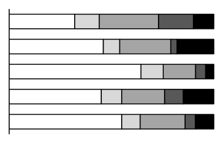
（A） 政府積極推動首要型都市政策，能吸引人口移往大型都市（B） 大型都市就業機會相對充分，促使鄉村人口大量移入求職（C） 鄉村產業結構不夠健全，許多失業人口移動至大型的都市（D） 殖民時代的大型都市，迄今公共設施充足，導致人口移入答案：（C）
詳解與考點 正解：題目要求比較圖2中拉丁美洲與歐洲各規模都市的人口比例，題眼是拉丁美洲人口較集中於大型都市的分布型態。這種過度都市化常反映鄉村產業結構不夠健全，失業人口移往大型都市，C 最能解釋圖示差異，故 C 為正解。
A：都市人口集中不能證明政府積極推動首要型都市政策，A 錯誤。
B：大型都市人口偏高不必然表示就業機會充分；過度都市化常是鄉村推力大於都市就業拉力，B 錯誤。它看起來對，是因為人口移入大型都市容易聯想到求職，但都市規模分布不能證明當地職缺充足。
D：殖民時代都市的公共設施是否充足，也不能由都市規模比例推得，D 錯誤。
本題考點：都市規模結構判讀——大型都市占比較突出，可判讀為人口集中；過度都市化判準——若人口移動主要來自鄉村產業凋敝與失業推力，不能直接等同於都市就業機會充足。
第 21 題
2022 年中國與太平洋的索羅門群島島國起草一份安全協議，中國將在索國設立軍事基地，因此引發澳大利亞的緊張。長期以來澳大利亞一直是索國主要的防衛夥伴，以及最大的援助國，因此特別關切「任何危害區域穩定和安全的行動，包括建立軍事基地的常在性設施」，但索國政府表示「正在擴大與更多國家安全合作，其中也包括中國」。索國的作法最可能帶來下列哪種國際情勢發展？
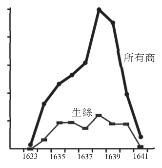
（A） 大洋洲地緣樞紐角色漸漸不再由南島語族國家掌控（B） 大洋洲各島國將逐步取代紐澳兩國的區域核心角色（C） 同屬大洋洲的塔斯馬尼亞可能與中國建立合作關係（D） 紐西蘭外交單位可能提出對大洋洲區域和平的立場答案：（D）
詳解與考點 正解：題幹的「中國將在索國設立軍事基地」與澳大利亞對區域穩定的緊張，顯示大國安全合作改變大洋洲權力平衡。D：紐西蘭同為大洋洲重要國家，最可能就區域和平與安全提出外交立場，故 D 為正解。
A：索羅門群島擴大安全合作，不能推論大洋洲地緣樞紐原本或將不再由南島語族國家掌控，A 錯誤。
B：單一島國與中國合作不足以推出各島國將逐步取代紐西蘭、澳大利亞的區域核心角色，B 錯誤。它看起來對，是因為小島國的外交自主性提高，但「取代核心角色」屬過度推論。
C：塔斯馬尼亞是澳大利亞的一州，沒有獨立對外締結安全合作的主權，C 錯誤。
本題考點：地緣政治與區域安全——外部強權在區域建立常在性軍事設施，會使鄰近國家關切安全並表態；情境推論須限於題幹可支持的反應，不可從單一合作事件推到主權地位或區域核心全面更替。
◎ 根據學者研究，荷蘭東印度公司與日本的進出口生意，於 1633 年後再度開張，並在 1638-1639 年達到高峰，成為日本最主要貿易夥伴之一。圖 3 為東印度公司與日本貿易興盛時期，販售所有商品及生絲的毛利潤（銷售收入－購買成本），其中生絲資料表示東印度公司賣生絲給日本所賺的錢。請問：單位（荷盾） 2,500,000 2,000,000 1,500,000 1,000,000
第 22 題
比較圖 3 中 1633 和 1638 年生絲毛利潤 500,000 所有商品生絲的變動，假設此期間其他條件不變且東印度公司對日本國內生絲的供給不變，針對此期間日本國內生絲市場供需的推論，下列何者最合理？
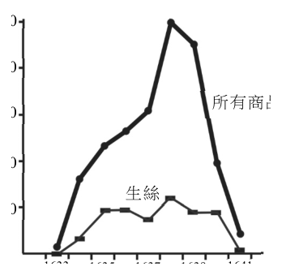
（A） 因價格提高，市場呈現供不應求（B） 因價格提高，促使日本減少進口（C） 因需求增加幅度大於供給增加，市場價格提高（D） 因需求減少幅度大於供給減少，市場價格提高 1633 1635 1637 圖 3 1639 1641 年代答案：（C）
詳解與考點 正解：題幹限定「其他條件不變」且荷蘭東印度公司對日本國內生絲的供給不變，圖中 1633 至 1638 年生絲毛利潤顯著上升，應以需求增加、供給不變來推論價格上升。C：需求增加幅度大於供給增加；在本題供給不變的條件下，需求上升會推高市場價格，故 C 正確。
A：價格提高本身不能判定市場供不應求；題設的關鍵是需求曲線右移而供給不變，A 將均衡價格上升誤說成供不應求，錯誤。
B：需求增加時，價格提高不必然促使日本減少進口；本題沒有「減少進口」的資料，B 錯誤。它看起來對，是因為一般會聯想到高價抑制購買量，但題目要判斷的是需求增加造成的均衡變動。
D：需求減少幅度大於供給減少會使價格提高，與題幹由毛利潤上升所推得的需求增加前提矛盾，D 錯誤。
本題考點：供需變動——在其他條件不變下，供給不變而需求增加，均衡價格上升；圖表經濟推論——先把題設限制轉成供需曲線變動，再判斷價格與交易量，不能僅由價格上升倒推供不應求。
第 23 題
某生在估計 1638 年日本的 GDP 時，疏忽了題文與圖 3 的相關貿易資料，經提醒納入後重新計算得到較高的 GDP 估計值。該生補上的必須是下列哪項資料才能得到這個結果？
（A） 東印度公司該年度對日貿易的總收益高於總成本（B） 東印度公司該年度對日貿易的總金額高於上年度（C） 東印度公司販售商品給日本的金額低於向日本買入的金額（D） 東印度公司賣生絲給日本的金額高於買入其他商品的金額答案：（C）
詳解與考點 正解：題幹問的是納入貿易資料後，為何日本的 GDP 估計值會提高；關鍵知識是 GDP 的淨出口＝出口－進口，必須從日本立場判斷貨物流向。C：東印度公司賣商品給日本，對日本是進口；向日本買入商品，對日本是出口。若賣給日本的金額低於向日本買入的金額，日本出口大於進口，淨出口為正，會推高 GDP，故 C 為正解。
A：東印度公司總收益高於總成本，說明的是該公司的貿易盈虧，不等於日本的出口減進口，無法據此判定 GDP 增加，A 錯誤。它看起來對，是因為「收益高於成本」容易被誤認為整體經濟產出增加，但 GDP 此處要看的是日本的淨出口。
B：總貿易金額高於上年度只反映交易規模變動，未比較日本出口與進口何者較大，不能推出淨出口為正，B 錯誤。
D：生絲賣給日本是日本進口；買入其他商品是日本出口。若前者金額較高，反而表示日本進口大於出口，淨出口下降，不會使 GDP 估計值提高，D 錯誤。
本題考點：GDP 的支出面——GDP 包含淨出口，淨出口＝出口－進口；貿易方向判讀——先固定題目所問國家，日本賣出為出口、日本買入為進口，再比較兩者金額判斷對 GDP 的影響。
◎ 民國 109 年間，我國中央政府開放進口美國含有萊克多巴胺（萊劑）的豬肉。為管制萊劑殘留標準，中央先修訂食安法，再依照新條文公告「動物用藥殘留標準」，另規定含有豬肉及豬可食部位的原料，須標示原產地，讓國人選購時清楚產地來源。針對開放萊豬的政策，部分地方政府採取因應措施，例如：某市在食品安全衛生管理自治條例規定，豬肉及其相關產製品不得檢出萊劑；經檢出者，依其含量處以不同罰鍰，並得按次處罰。但行政院於同年底，函告該市政府上述自治條例相關內容無效。請問：
第 24 題
題文中，中央必須「先修訂食安法、再公告殘留標準」背後的法理考量，與下列何種情況的法理考量最為相似？
（A） 憲法規定命令如違反國會所制定的法律則無效（B） 課徵人民稅捐涉及憲法上財產權應由法律規範（C） 子女從父姓或母姓在民法規定由父母自行約定（D） 少年犯罪應優先適用少年事件處理法而非刑法答案：（B）
詳解與考點 正解：題幹「先修訂食安法、再公告殘留標準」表示涉及重要權利事項時，行政機關須先有法律依據，觸發法律保留原則。B：課徵稅捐限制人民財產權，應由法律規範，法理相同。
A：命令違法無效是在說法律與命令的位階關係。
C：父母約定子女從姓是民法已規定的私法自治安排。
D：少年事件處理法優先於刑法是特別法優先。A、C、D 都不是要求先以法律授權行政作為的問題。
本題考點：法律保留原則——限制人民權利或負擔重要義務時，先檢查是否有法律依據；概念區分——命令位階、私法自治與特別法優先，分別不是法律保留。
第 25 題
其他條件不變下，原產地標示原則的實施，對於國產豬肉與萊豬市場的均衡價格與數量，最有可能造成何種變化？
（A） 國產豬肉價格上升，數量上升；萊豬的價格下降，數量下降（B） 國產豬肉價格上升，數量下降；萊豬的價格下降，數量上升（C） 國產豬肉價格下降，數量下降；萊豬的價格上升，數量上升（D） 國產豬肉價格下降，數量上升；萊豬的價格上升，數量下降答案：（A）
詳解與考點 正解：題幹的「原產地標示」使消費者能區分國產豬肉與萊豬，觸發需求曲線移動的判斷。A：國產豬肉因資訊可辨識而需求增加，均衡價格、數量皆上升；萊豬因被明確標示而需求減少，均衡價格、數量皆下降，故 A 為正解。
B：國產豬肉需求增加時，均衡數量應上升，不會下降；萊豬需求減少時，均衡數量應下降，不會上升，B 錯誤。
C、D：兩項都把兩種豬肉的價格變動方向判反；在供給不變下，需求增加使均衡價格與數量同升，需求減少則使兩者同降，C、D 錯誤。
本題考點：市場均衡與資訊——其他條件不變時，需求增加使均衡價格、數量同時上升，需求減少使兩者同時下降；原產地標示改變消費者辨識與偏好，先判需求移動方向再判均衡結果。
第 26 題
依據題文，下列何者最足以作為函告該自治條例無效的理由？
（A） 未經由地方議會針對該條例審議通過（B） 未舉辦地方公民投票由民眾投票決議（C） 與行政院相關部會的政策立場相違背（D） 與立法院通過之食安法內容相互牴觸答案：（D）
詳解與考點 正解：題幹關鍵是中央先修訂食安法並依法律公告萊劑殘留標準，地方自治條例卻規定萊劑不得檢出；判斷自治條例效力要先檢驗是否牴觸上位法律。D：地方自治條例不得牴觸法律，該市的零殘留規定與立法院通過的食安法及其授權標準相互牴觸，故 D 為正解。
A：自治條例須經地方議會審議，但題文未指出該條例未經審議；即使程序完成，內容牴觸法律仍可能無效，A 錯誤。
B：制定此類自治條例無須先舉辦地方公民投票，B 錯誤。
C：地方政策與行政院相關部會立場不同，本身不足以使自治條例無效；須有牴觸上位法律的情形，C 錯誤。它看起來對，是因為行政院確實反對地方的管制內容，但無效的法律理由在於牴觸法律，而非政策歧見。
本題考點：地方自治條例效力界限——自治條例不得牴觸憲法、法律或上位法規範；判斷地方規定是否無效時，先比對其規範內容與法律授權及法律標準是否衝突，而非只看政策立場是否一致。
某國政府擬推動全民換發數位身分證計畫，整合戶口、醫療、租稅等資訊，提供人民更便捷的政府服務。認同此計畫的支持者期望藉此實現「數位國家」願景；但有公民團體質疑政府缺乏審慎規劃，擔憂該政策將導致人民喪失個人資訊的控制力，主張必須先制定特別法律，明訂授權範圍、加密機制、跨部門讀取資訊的條件與監督機制。因爭議擴大，該國政府最後放棄換發計畫。某高中生瀏覽相關爭議的網路留言後，心生疑惑：「先前民間團體利用政府資訊製作疫苗數位地圖，協助民眾查找疫苗施打場所，廣受社會稱許，為何數位身分證卻飽受質疑？」請問：
第 27 題
對於該國數位身分證計畫引發的爭議，某公民團體發表聲明指出：國家的＿＿＿＿，因此政策制訂過程應該更審慎。依據題文資訊，下列何者最適合填入該聲明的空格內？
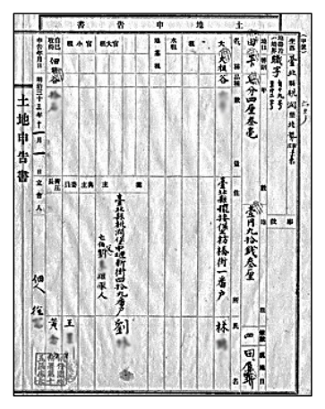
（A） 資訊服務涉及特別的跨部會合作機制（B） 職責在於提供人民更便捷的政府服務（C） 願景實現攸關能否讓人民產生認同感（D） 權力行使範圍及其影響既廣泛且深遠答案：（D）
詳解與考點 正解：題眼是數位身分證整合戶口、醫療、租稅等資料，並可能影響人民對個人資訊的控制；空格須說明政策為何應更審慎。D：國家權力行使的範圍及其影響既廣泛且深遠，正能作為要求審慎立法、授權與監督的理由，故 D 為正解。
A：跨部會合作是行政安排，不能充分說明何以必須特別審慎。
B：提供便捷政府服務是政策目的，反而是支持者的論點，不是限制權力的理由。
C：讓人民產生認同感是願景成效，不能回應個資控制與權力監督的疑慮。它看起來對，是因為認同感確實影響政策接受度，但題幹問的是公權力介入為何需要審慎。
本題考點：政府權力與基本權——整合大量個人資料會擴大公權力對隱私的影響；政策正當性判準——權力範圍愈廣、後果愈深遠，愈需要明確授權、使用條件與監督機制。
第 28 題
針對該高中生的疑惑，從資訊利用行為與個人權利的角度來看，下列何種見解最為合理？
（A） 疫苗地圖增強人民行動自由，數位身分證增強人民知的權利，應予相同評價（B） 疫苗地圖增強人民知的權利，數位身分證削弱人民的隱私權，應予不同評價（C） 疫苗地圖削弱人民的隱私權，數位身分證增強人民人身自由，應予不同評價（D） 疫苗地圖削弱人民人身自由，數位身分證削弱人民行動自由，應予相同評價答案：（B）
詳解與考點 正解：題幹的關鍵在資訊利用是否擴大人民取得公共資訊的能力，或使個人失去個資控制力。B：疫苗地圖利用公開資訊協助查找施打地點，增強人民知的權利；數位身分證整合戶口、醫療、租稅等個資，可能削弱隱私權，兩者應作不同評價，故 B 為正解。
A：疫苗地圖主要增強的是知的權利，不是行動自由；數位身分證的爭議也在隱私權而非知的權利，A 錯誤。
C：疫苗地圖未揭露個人資料，並不削弱隱私權；數位身分證的疑慮也非增強人身自由，C 錯誤。
D：疫苗地圖不會削弱人身自由，數位身分證的核心爭議亦非行動自由，D 錯誤。它看起來對，是因為兩者都使用數位資訊，容易誤以為對權利的影響必然相同。
本題考點：資訊利用與基本權利——使用公開資訊協助民眾取得服務，通常關聯知的權利；蒐集、整合或跨部門讀取個人資料，須檢視資訊自主與隱私權是否受侵害，依影響的權利種類判斷評價是否不同。
第 29 題
依題文資訊，下列何者最可能是該國政府放棄換發計畫所產生的機會成本？
（A） 政府整合資訊減低民眾申辦政府業務的交易成本（B） 政府為了保護民眾的個人資料所降低的外部成本（C） 政府蒐集民眾的資訊進行數位整合而投入的成本（D） 政府制定特別法規範自身行為所產生的額外成本答案：（A）
詳解與考點 正解：題幹問政府放棄換發計畫的機會成本，應找「放棄該計畫所失去的最高價值利益」，而非已避免的支出。A：政府原可整合資訊、降低民眾申辦政府業務的交易成本；放棄計畫即失去此便利效益，故 A 為正解。
B：保護個人資料而降低的外部成本，並非題示放棄計畫所失去的利益，且外部成本概念不合，錯誤。
C：蒐集資訊與數位整合的投入，是放棄後得以避免的支出，不是放棄所犧牲的效益，錯誤。它看起來對，是因為它確實與計畫相關，但機會成本問的是未選方案失去的利益，不是原本要付出的成本。
D：制定特別法規範自身行為的額外成本，屬另案才可能發生的成本，非放棄換發計畫的機會成本，錯誤。
本題考點：機會成本——在可選方案中，選擇一案所放棄的最高價值利益；辨析判準——已避免的支出與另案成本都不是放棄方案造成的機會成本。
第 30 題
依據表 2，何人是土地調查時臺灣總督府認為的實際土地所有人？
表 2 項目 資料內容 土地座落 桃澗堡北勢庄 土地面積 0.7 甲 大租 0.6 石（約 62 公斤） 大租戶 林三 業主 劉四，劉大的繼承人 佃人 徐六
（A） 劉大（B） 劉四（C） 林三（D） 徐六答案：（B）
詳解與考點 正解：題幹的 1900 年土地調查以申告書確認權利人，關鍵在表中的身分名稱「業主」；日治初期土地調查認定業主為實際土地所有人。B：劉四是業主，故為臺灣總督府認定的實際土地所有人。
A：劉大不是表中標示的業主，不能據此認定為實際所有人，A 錯誤。
C：林三是大租戶，大租戶具有收取大租的權利，不等於土地所有權人，C 錯誤。它看起來對，是因為大租戶可收取租額，容易被誤認為地主。
D：徐六是佃人，僅實際耕作土地，並非土地所有人，D 錯誤。
本題考點：日治初期土地調查——依土地申告與調查結果確認業主為實際土地所有人；清代土地權利辨析——大租戶有收租權、佃人有耕作關係，兩者都不能直接等同業主。
第 31 題待校
該資料最適合作為該生探究下列哪項主題的佐證史料？
（A） 保甲制度（B） 減四留六（C） 割地換水（D） 三七五減租答案：（B）
詳解與考點 考日治大租權整理。申告書同記大租戶與業主，呈現「一田二主」，正是總督府以公債收買、廢大租權、確立業主單一所有權的史料，對應「減四留六」，選 (B)。陷阱：保甲屬治安、割地換水為清代水利、三七五減租是戰後土改，時代主題均不符。
◎ 某生探究臺灣勞工移動與社會經濟環境的關係時，蒐集了三份資料與圖 5、圖 6 兩張臺灣勞工遷徙流線圖（線條粗細代表數量多寡）。請問：資料一、流行歌曲：親愛的父母再會吧！ 1935-1985 1985-2000 鬥陣（在一起）的朋友告辭啦！阮（我）欲來（想要）去臺北打拼，聽人講啥咪（什麼）好康（好處）的攏（都）在那……。資料二、報紙社論：民間產業引進外籍移工，雖提振北部都會區的經濟，卻也迫使本地勞工移出北部都會區另覓工作機會。資料三、學術論文：做農的人學習組裝或機械技術，前往加工出口區、參與十大建設，搖身變成做工的人。圖 5 圖 6
第 32 題
若將遷徙流線圖與資料進行配對，資料一、二、三最適合的配對，最可能為下列何者？
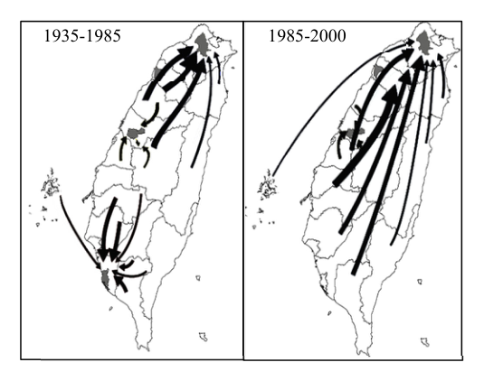
（A） 資料一：圖 5，資料二：圖 6（B） 資料一：圖 6，資料二：圖 5（C） 資料一：圖 5，資料三：圖 6（D） 資料一：圖 6，資料三：圖 5答案：（D）
詳解與考點 正解：資料一的「欲來去臺北打拼」指出勞工由各地往北部都會區移動；資料三的農民學習組裝、機械技術並前往加工出口區、參與十大建設，指向農轉工與中南部工業發展。圖 6（1985-2000）呈各地單向往北匯集，對應資料一；圖 5（1935-1985）呈北南雙核並吸，對應資料三。D：資料一配圖 6、資料三配圖 5，正確，故 D 為正解。
A：將資料一配圖 5，忽略資料一明確的向北拉力；資料二所述本地勞工移出北部都會區，也不符圖 6 的各地向北匯集，A 錯誤。
B：資料一雖正確配圖 6，但資料二是北部勞工外移，不能對應圖 5 所示的北南雙核吸引，B 錯誤。
C：資料一配圖 5 與其「去臺北打拼」的單向北移不符；資料三配圖 6 也忽略中南部加工出口區與十大建設的吸引作用，C 錯誤。
本題考點：遷徙流線圖與史料配對——先由史料擷取移動方向、目的地與產業拉力，再對照流線圖的匯集中心；年代與區域判準——1985-2000 的北部都會拉力對應單向北移，1935-1985 的工業化則可形成北南雙核吸引。
第 33 題
透過圖 5 與圖 6，最適合用來解釋臺灣這段時期具有下列哪種區域發展過程？
（A） 部分核心持續成長，但多數地區開始出現反吸隱憂（B） 都市對外聯繫密切，對區域發展持續帶來擴散效應（C） 北部經濟成長快速，但與南部呈現不平等交換問題（D） 人口多往都市集中，各地都市化程度明顯持續成長答案：（A）
詳解與考點 正解：官方答案為 A；惟本筆輸入未保留圖 5、圖 6 的遷徙流向與線條粗細，無法只由現有文字獨立覆核。原詳解記錄兩圖顯示北部核心仍吸引人口，但部分原本成長地區已由吸入轉為流出；依此圖示紀錄，核心持續成長並伴隨多數地區的反吸隱憂，A 為官方正解。
B：依原圖示紀錄，主要現象是人口向核心集中，並非都市持續向周邊擴散發展效益，B 錯誤。
C：南北不平等交換須有資源或經濟利益交換的證據；人口遷徙流線本身不足以判定，C 錯誤。
D：人口往都市集中不等於各地都市化程度皆持續明顯成長；原圖示紀錄中部分地區反而人口外流，D 錯誤。
本題考點：核心—周邊發展——核心持續吸引人口與資源時，檢查周邊是否出現反吸效應；流線圖判讀——以各時段的流向與線條粗細判定集中、擴散或外流。
第 34 題
該地具有風速強勁的特色，下列何者是形成此特色的主要原因？
（A） 緊鄰大陸且無山勢屏障，導致冷鋒常夾帶強風長驅南下（B） 太平洋熱帶性低氣壓擾動頻繁，導致強風吹襲日數較多（C） 季風通過臺灣海峽，由於海峽寬度縮減，導致風速增強（D） 太陽幾乎終年直射，對流旺盛，導致白天常有強風發生答案：（C）
詳解與考點 正解：金門位於臺灣海峽北段，題幹的「風速強勁」須由海峽地形與季風共同判讀；季風通過臺灣海峽時，因海峽寬度縮減，氣流受壓縮而加速，形成狹管效應，故 C 為正解。
A：冷鋒南下可帶來強風，但不能說明金門長期風速強勁的主要地形成因，A 錯誤。它看起來對，是因為金門確會受大陸冷氣團與冷鋒影響，卻忽略題目問的是風速增強的主要機制。
B：熱帶性低氣壓擾動並非金門特有，也不足以解釋其經常性的強風，B 錯誤。
D：強烈日照造成的對流風是熱帶地區常見現象，金門的強風主要與季風通過海峽的地形效應相關，D 錯誤。
本題考點：季風與地形效應——氣流通過較狹窄的海峽或通道時，會因受壓縮而加速；區域氣候判讀——長期且具地方性的強風，優先以盛行風和地形配置解釋。
第 35 題
若該生要獲得較具科學性的成果，除利用 GPS 工具外，還適合透過下列哪三項資料作為支持此探究主題的材料？甲、遊客問卷結果；乙、耆老訪談紀錄；丙、聚落分布圖（比例尺 1/400000）；丁、聚落內部測繪圖（比例尺 1/1000）；戊、聚落附近測站的氣候數據；己、田野調查當天的風向風速計測量數據。
（A） 甲丙戊（B） 甲丁己（C） 乙丙己（D） 乙丁戊答案：（D）
詳解與考點 正解：探究「石獅爺設立位置與盛行風向的關係」，需同時取得設立緣由、聚落內精確位置與具代表性的長期風向資料。D：乙的耆老訪談紀錄可說明設立緣由；丁的聚落內部測繪圖比例尺為 1/1000，適合定位單點；戊的附近測站氣候數據可呈現長期盛行風向，三者能支持研究，故 D 為正解。
A：甲的遊客問卷反映遊客意見，不能證明石獅爺位置與風向的關係；丙的比例尺 1/400000 過小，難以定位聚落內石獅爺的位置，A 錯誤。
B：甲的遊客問卷與研究主題關聯低；己僅為田野調查當天的風向風速，無法代表盛行風向，B 錯誤。它看起來對，是因為己是實地量測資料，但單日觀測不足以代表長期氣候特徵。
C：乙可說明設立緣由，但丙比例尺過小、己又只代表單日風況，不能形成較具科學性的證據，C 錯誤。
本題考點：地理田野調查——研究位置關係須用足以定位的較大比例尺圖；盛行風判準——盛行風是長期出現頻率最高的風向，應採長期測站氣候數據，不以單日量測代替；資料互證——訪談可補足設立緣由，空間與氣候資料則用於檢驗位置關係。
第 36 題
照片中聚落的災情，其形成原因最可能為下列何者？
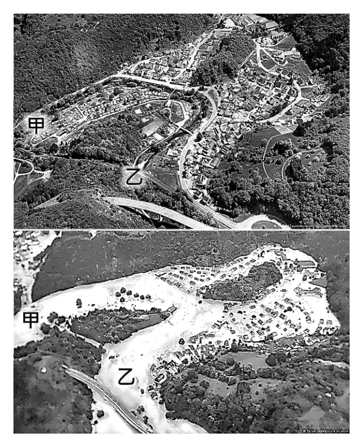
（A） 洪水從甲河段襲來，沖擊位於滑走坡的聚落（B） 洪水從甲河段襲來，沖擊位於基蝕坡的聚落（C） 洪水從乙河段襲來，沖擊位於滑走坡的聚落（D） 洪水從乙河段襲來，沖擊位於基蝕坡的聚落答案：（B）
詳解與考點 正解：判斷洪水來向須先比較甲、乙河段的地勢，再以河彎凹、凸岸判斷侵蝕位置。依照片標示，甲河段地勢高於乙河段，洪水由甲往乙流；聚落位於河彎凹岸，凹岸流速較快、侵蝕較強，屬基蝕坡。B 同時符合洪水來向與聚落位置，故 B 為正解。
A：洪水由甲河段襲來的判斷正確，但聚落位於凹岸的基蝕坡；滑走坡是凸岸的堆積側，錯誤。
C：乙河段地勢較低，不是洪水往聚落襲來的上游來源；聚落也不在滑走坡，錯誤。
D：聚落位於基蝕坡的判斷正確，但洪水來向應是地勢較高的甲河段，不是乙河段，錯誤。
本題考點：曲流地形——河水由高處往低處流；判準是凹岸為基蝕坡，流速較快且侵蝕較強，凸岸為滑走坡，以堆積作用為主。
第 37 題
若以行星風系的尺度，造成該次降水事件的原因，最可能與下列哪個風帶或氣壓帶關係密切？
（A） 極圈氣旋帶（B） 極地高壓帶（C） 東北信風帶（D） 副熱帶高壓帶答案：（A）
詳解與考點 正解：題幹以行星風系尺度追問中緯度豪雨的成因，德、比、盧位於中緯度，關鍵是極圈氣旋帶常見的氣旋與鋒面活動。A：極圈氣旋帶位於中緯度，氣流輻合上升，常伴隨氣旋與鋒面，較有利形成降雨，故 A 為正解。
B：極地高壓帶空氣乾冷下沉，不利形成中緯度豪雨。
C：東北信風帶位於低緯度，與德、比、盧所在的中緯度不符。
D：副熱帶高壓帶多為下沉氣流，常帶來乾燥晴朗天氣，非本次多雨成因。
本題考點：行星風系——中緯度西風帶與極鋒附近常有氣旋、鋒面活動；降水判準——上升氣流與鋒面輻合有利降雨，下沉高壓則抑制降雨。
◎ 臺灣已成為世界晶片重要供應地，主要原因是從設計、製造到封裝測試的上下游廠商，形成相互依存的關係。不少其他亞洲開發中國家想要在短期內複製臺灣的成功經驗，但都難以跨越門檻，原因在於此產業尚需高品質的技術與人力，才能持續突破晶片微細加工的瓶頸，而臺灣已長期藉由產官學合作進行人才培養與技術研發。請問：
第 38 題
文中提到臺灣成為世界晶片重要供應地的原因，最可能是該產業具有下列哪項發展特性？
（A） 產業連鎖較緊密（B） 規模經濟較龐大（C） 工業慣性較明顯（D） 生產趨向標準化答案：（A）
詳解與考點 正解：題幹明示從設計、製造到封裝測試的上下游廠商相互依存，題眼是前後生產環節的連結。A 的產業連鎖緊密正指產業前後關聯強，故選 A。
B：規模經濟是單一廠商擴大產量而降低平均成本，非上下游相互依存。
C：工業慣性是既有產業區位因累積優勢而延續，未直接說明供應鏈環節。
D：生產標準化不是文中強調的研發、人才與供應鏈連結。
本題考點：產業群聚——題幹出現設計、製造、封測等上下游互賴時，判為產業連鎖緊密；規模經濟須看到產量擴大降成本，工業慣性須看到既有區位持續吸引。
第 39 題
若僅針對文中所述，其他亞洲開發中國家短期難以複製臺灣經驗的原因，最可能是下列何者？
（A） 欠缺良好原料工業區位條件（B） 知識經濟發展進程相對緩慢（C） 企業未能形成垂直整合結構（D） 國際分工體系尚未完整建立答案：（B）
詳解與考點 正解：題幹明示晶片產業須長期累積高品質技術與人力，並透過產官學合作培養人才與研發。B：其他亞洲開發中國家在知識、技術與人才的累積較慢，最能說明其短期難以複製臺灣經驗，故 B 為正解。
A：題文未以原料工業區位作為晶片產業門檻，A 錯誤。
C：題文強調上下游相互依存，並未指出問題是企業未形成垂直整合，C 錯誤。它看起來對，是因為上下游關係容易讓人聯想到整合，但原文的關鍵門檻是技術與人才。
D：題文未說國際分工體系不完整，D 錯誤。
本題考點：知識經濟——高科技產業競爭力仰賴技術、人力與研發累積；文意判讀——選項必須對應題幹明示的短期門檻，不可自行補入原料或國際分工因素。
第 40 題
該篇學術研究最可能使用到下列哪種地理資訊分析方法？
（A） 環域分析（B） 路徑分析（C） 視域分析（D） 地形分析答案：（A）
詳解與考點 正解：題幹關鍵是研究住在油井與天然氣井「周遭」的民眾人口特色，必須先劃定各井周圍一定距離的範圍，再分析該範圍內居民分布。A：環域分析（Buffer Analysis）正是以地點為中心建立指定距離的周邊區域，最符合題意，故 A 為正解。
B：路徑分析用於尋找兩地間的最佳或最短交通路線，並非界定井場周邊居民，B 錯誤。
C：視域分析用於判斷地點之間是否可視及可視範圍，與居民距油井的鄰近關係無關，C 錯誤。
D：地形分析用於處理高程、坡度、坡向等地表特徵，無法直接找出油井周圍一定距離內的人口，D 錯誤。
本題考點：GIS 空間分析——研究某設施周圍一定距離內的對象，使用環域分析建立緩衝區；方法辨識判準——問最佳路線選路徑分析，問可見範圍選視域分析，問高程坡度選地形分析。
第 41 題
文中提到的社群最可能是以下列哪個族裔為主？
（A） 亞裔（B） 非裔（C） 拉丁裔（D） 阿拉伯裔答案：（C）
詳解與考點 正解：題幹以加州南部、德州西南部的油井與天然氣井周遭社群為線索，這兩地拉丁裔人口密集，且常被視為美國環境正義研究中社會處境相對不利的典型案例。C：文中社群最可能以拉丁裔為主，故 C 正確。
A：亞裔雖在加州有重要人口，但題幹所指加州南部與德州西南部的區域特徵，較不符合亞裔為主的推論，A 錯誤。它看起來對，是因為加州常讓人聯想到亞裔人口眾多，卻忽略題幹限定的是加州南部與德州西南部。
B：非裔人口較集中於德州東部及美國南方其他地區，與題幹兩地的主要族裔分布不符，B 錯誤。
D：阿拉伯裔人口規模較小，分布也不符合題幹所指區域，D 錯誤。
本題考點：美國族裔與環境不正義——由區域人口分布與社會處境判斷研究對象；區位判準——加州南部與德州西南部出現環境風險暴露社群時，優先連結拉丁裔人口密集的特徵。
南投縣仁愛鄉南豐村眉溪畔聚居許多賽德克族人，該部落於日治時期被統治者強制遷居於此。因部落常遭風災肆虐，鄉公所乃在易達性較高與安全條件較佳的地點，設置「災害應變中心避難收容處」（圖 7）。近年該部落與政府合作一項計畫，由部落族人參與討論公共資源分配，最後透過投票選出最需要投入經費在族語、弓箭等傳統文化的傳承。此外族人也以集體名義，申請原住民族傳統智慧創作專用權，讓該計畫充分發揮強化族人自治與文化復振的功效。請問：
第 42 題
依據題文及圖 7，鄉公所最可能選擇下列何處作為「災害應變中心避難收容處」的設置地點？
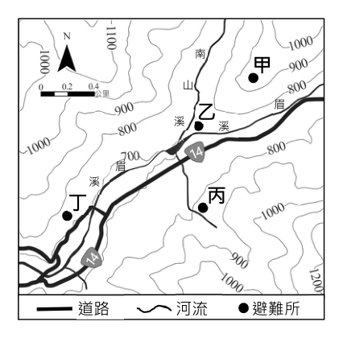
（A） 甲（B） 乙（C） 丙（D） 丁答案：（D）
詳解與考點 正解：題幹以「易達性較高」與「安全條件較佳」限定避難收容處的選址，必須同時比較交通與災害風險。D：丁位於道路旁，且鄰近既有避難所符號，易達性高；其地勢平緩，又遠離眉溪與南山溪，較不易受洪患，最適合作為避難收容處，故 D 為正解。
A：甲雖位於較高處、遠離河流，但距離道路較遠，災時不利人員抵達與物資運送，未兼顧易達性，A 錯誤。
B：乙緊鄰河流，容易受洪水影響，安全條件不足，B 錯誤。它看起來對，是因為位置可能靠近聚落或道路，但避難場所不能忽略河岸的淹水風險。
C：丙接近河谷，較可能受洪患或土石災害影響，安全性不如丁，C 錯誤。
本題考點：地圖選址判讀——避難收容處須同時符合易達性與安全性；災害風險判準——靠近河流、河谷處優先排除，並選擇道路可及且地勢較平緩的地點。
第 43 題
導致部分賽德克族人被遷居到南豐村的歷史事件是：
（A） 1906 年日警設置隘勇線，被迫退居南豐村（B） 1910 年林野調查後，喪失地權而遷居此處（C） 1930 年霧社事件後，因集團移住遷居於此（D） 1937 年皇民化政策後，強制遷居至川中島答案：（C）
詳解與考點 正解：題幹問賽德克族人遷居南豐村的直接歷史事件，關鍵在霧社事件後的統治措施。C：1930年霧社事件後，總督府推動「集團移住」，強制遷居餘生族人至眉溪畔南豐村以利控管，故 C 為正解。
A：1906年設置隘勇線屬山地防隘措施，非遷居南豐村的直接原因。
B：1910年林野調查涉及土地調查與地權，不是本次集團移住的事件。
D：1937年皇民化政策並非賽德克族人被遷至南豐村的主因。
本題考點：日治原住民族政策——霧社事件後的集團移住以集中居住、便於統治控管為目的；歷史事件判讀——以年代與政策性質同時核對因果關係。
第 44 題
該部落與政府合作的計畫，最能凸顯以下哪項民主治理的理念？
（A） 由地方政府推動資源分配計畫，最能代表在地意見（B） 經民眾投票產生的多數決，最符合公平的決策模式（C） 民眾直接參與決策比由議會決定，更符合公共利益（D） 開放地方民眾參與決策過程，更能回應在地的需求答案：（D）
詳解與考點 正解：題眼是部落族人「參與討論公共資源分配，最後透過投票選出」最需要投入的文化傳承項目，觸發公民參與及回應在地需求的民主治理理念。D：開放地方民眾參與決策過程，能使資源配置納入部落自身的需求與文化脈絡，最符合題意，故 D 為正解。
A：題幹雖有政府合作與鄉公所設置避難收容處，但本計畫的重點是族人參與討論及投票，不是由地方政府單獨推動即可代表在地意見，A 錯誤。
B：多數決是本案採用的程序之一，卻不能單獨保證決策最公平；題幹凸顯的是讓部落成員參與分配過程，B 錯誤。
C：題幹沒有比較直接參與與議會決定何者必然更符合公共利益。它看起來對，是因為族人確實直接參與投票，但選項作了過度的一般化比較，C 錯誤。
本題考點：民主治理與公民參與——判斷題幹所強調的程序，地方民眾參與討論與決策即是回應在地需求；選項收斂判準——題幹未作制度優劣比較時，不推論直接民主必然優於代議制度。
第 45 題
題文中該部落申請之權利，其性質和下列所舉的原住民族權利中的哪種權利相同？
（A） 選擇信仰的權利（B） 傳統領域的權利（C） 原住民傳統姓名權（D） 申請保留地的權利答案：（B）
詳解與考點 正解：題幹的「原住民族傳統智慧創作專用權」是以族人集體名義保障族語、弓箭等文化資產；B 的傳統領域權同樣屬原住民族群的集體性權利，故 B 為正解。
A：選擇信仰的權利是個人基本權利，不是族群集體文化權利，A 錯誤。
C：原住民傳統姓名權由個人行使，C 錯誤。
D：申請保留地涉及土地使用與個別申請，性質不同於集體文化資產的專用權，D 錯誤。
本題考點：原住民族權利分類——傳統智慧創作專用權與傳統領域權皆以族群整體為權利主體；辨析時先分個人權利、集體文化權利與土地使用權。
◎ 某國學者指出：民主國家興起「鍵盤行動參與」，雖然提升公共參與頻率，卻衍生一種現象：習慣在鍵盤上評論時事，只對立場相同的言論按讚；過度追捧支持的政黨，謾罵自己不喜歡的。當支持的政黨勝選時，同溫層一片歡呼，敗選時則充斥憤恨言論，以致不同立場的人民彼此敵對。這種現象提醒公民應具備良好的政治知能，要瞭解執政者和民意代表只是人民選出的公僕，須對人民負責，做不好就下台，政黨輪替是天經地義，不應將政治人物當成偶像明星來崇拜；更要瞭解無論總統制或內閣制、單一國會或雙國會，民主政府組織及運作的最重要原理為何，畢竟權力易於腐化，權力越集中就越腐化。請問：
第 46 題
若要探究我國是否出現該學者指稱的參與現象，下列何者是最適當且必要的佐證資料？
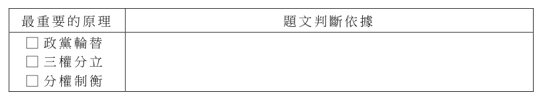
（A） 公共政策網路參與平台提案者及附議者的政黨立場分析（B） 不同政黨支持者的教育程度及其網路使用行為之相關性（C） 民眾網路言論傾向與對不同政黨支持者的好感度之關聯（D） 民眾的政黨偏好及其對政府施政滿意度的網路調查分析答案：（C）
詳解與考點 正解：題幹界定的現象是網路上偏好同立場言論、敵視不同立場者，因此佐證必須同時測量網路言論傾向與對異黨支持者的態度。C 直接分析這兩個核心變項的關聯，最適當且必要，故 C 為正解。
A：提案與附議者的政黨立場只能呈現平台參與者分布，未直接測到對異己的敵意，錯誤。
B：教育程度與網路使用行為未觸及同溫層或政治敵對，錯誤。
D：政黨偏好與施政滿意度可反映政治評價，未測量對不同政黨支持者的好感度，錯誤。
本題考點：研究效度——佐證資料須直接操作化題幹的核心概念；變項對應判準——驗證同溫層敵對現象，應同時測量網路立場與對異立場者的態度。
第 47 題
依題文判斷，該學者所謂的「民主政府組織及運作的最重要原理」，應為下列何者？請在答題卷表格先勾選一項最重要的原理，再從題文摘述判斷依據。（ 3 分， 20 字內；左欄未勾選或勾錯，本題不計分）最重要的原理 □ 政黨輪替 □ 三權分立 □ 分權制衡題文判斷依據
本題選項為上圖中的 A／B／C／D，請對照圖片作答。
標準答案未收錄
詳解與考點 考點：民主運作核心原理（非選）。依據句「權力越集中就越腐化」指向防權力集中，應勾「分權制衡」；理由引此句說明須以制衡防腐。陷阱：勿勾「政黨輪替」（屬問責）或「三權分立」（僅制衡形式之一）。（AI需查證）
◎ 城隍爺自古即是守護城池的神明。明初以後，中央政府在府、州、縣的地方各層級興建城隍廟，將城隍信仰制度化，但縣以下的農村仍信奉舊有的土地公而未設城隍廟。十六世紀後，江南社會經濟繁榮，出現許多新興商業市鎮，它們可能在國家體制之外另建「鎮城隍廟」，祀奉各自所屬縣的城隍爺。每年廟會時，周圍農村的土地廟也會至鎮城隍廟進香，作為神明之間的聯誼，形成層級化信仰圈。請問：
第 48 題
鎮城隍廟也祀奉各自所屬縣的城隍爺，其主要原因最可能是：
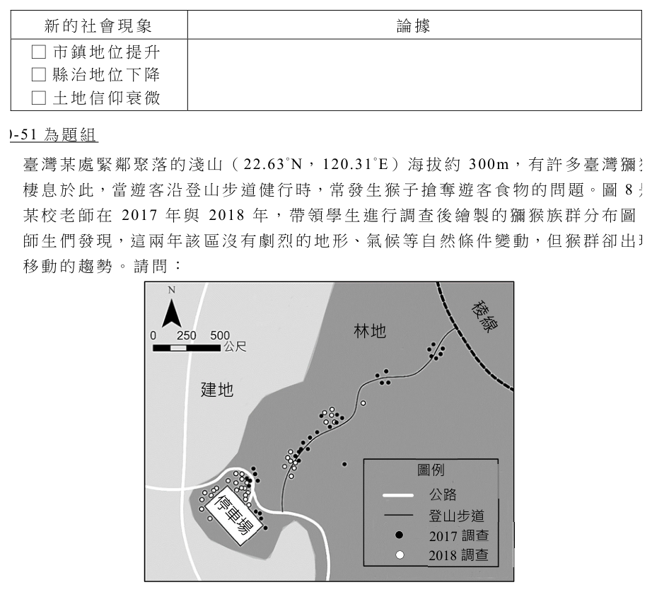
（A） 鎮城隍廟主神需同樣是周圍農村信仰的神（B） 城隍信仰可反映分層管理的地方行政體系（C） 從縣城往來市鎮者能夠於交易時順道參拜（D） 國家開始在市鎮設置政府機構以管理商業答案：（B）
詳解與考點 正解：題幹說鎮城隍廟祀奉所屬縣的城隍爺，周圍農村土地廟再向鎮城隍廟進香，形成層級化信仰圈；關鍵在城隍信仰與府、州、縣的行政層級相互對應。B 的「城隍信仰可反映分層管理的地方行政體系」最能說明鎮城隍廟祀奉縣城隍爺的原因，故 B 為正解。
A：周圍農村原本信奉土地公，題文未說鎮城隍廟主神必須與農村信仰相同，A 錯誤。
C：從縣城往來市鎮者順道參拜，至多是可能的附帶情況，不能解釋為何鎮城隍廟特別祀奉所屬縣的城隍爺，C 錯誤。
D：題文說商業市鎮可能在國家體制之外另建鎮城隍廟，未說國家在市鎮設置政府機構管理商業，D 錯誤。它看起來對，是因為城隍信仰確與行政層級相關，但「信仰對應行政」不等於市鎮已有政府機構。
本題考點：明代城隍信仰——城隍廟制度化並對應府、州、縣層級；史料解釋判準——選項須同時解釋「所屬縣城隍」與「層級化信仰圈」，不能只提出無關的便利或臆測設官。
第 49 題
根據題文，明代中期以後江南地區出現鎮城隍廟，反映什麼新的社會現象？請在答題卷上勾選一個正確選項（ 1 分），並從題文內找出論據（ 2 分， 40 字內）。新的社會現象 □ 市鎮地位提升 □ 縣治地位下降 □ 土地信仰衰微
本題選項為上圖中的 A／B／C／D，請對照圖片作答。
標準答案未收錄
詳解與考點 考點：明代中期後江南商業市鎮興盛，超越縣以下行政層級，故在國家體制之外自建「鎮城隍廟」，反映市鎮社會地位提升。論據應從題文引述：十六世紀後江南出現新興商業市鎮，在國家體制之外另建鎮城隍廟，且周圍農村土地廟至此進香，形成層級化信仰圈。正解：市鎮地位提升。常見陷阱：誤選「縣治地位下降」，題文未述縣城衰退，僅是市鎮崛起相對凸顯。【AI 整理需查證】
臺灣某處緊鄰聚落的淺山（22.63˚N，120.31˚E）海拔約 300m，有許多臺灣獼猴棲息於此，當遊客沿登山步道健行時，常發生猴子搶奪遊客食物的問題。圖 8 是某校老師在 2017 年與 2018 年，帶領學生進行調查後繪製的獼猴族群分布圖。師生們發現，這兩年該區沒有劇烈的地形、氣候等自然條件變動，但猴群卻出現移動的趨勢。請問：
第 50 題
該地獼猴的棲地，最可能屬於下列哪種生態環境？
（A） 火山邊坡坡地上密布的灌木叢與箭竹林（B） 廣大沙丘群上遍布的防風林與保安林木（C） 高位河階地上長滿茂密果實的針葉林木（D） 海岸隆起珊瑚礁山丘上蓊鬱的闊葉林木答案：（D）
詳解與考點 正解：題幹的座標 22.63°N、120.31°E、海拔約 300m 與緊鄰聚落的淺山，指向高雄壽山；壽山為海岸隆起珊瑚礁地形，覆蓋蓊鬱闊葉林，是臺灣獼猴棲地。D 符合，故選 D。
A：火山邊坡的箭竹林多見於火山或較高冷環境，與壽山的珊瑚礁淺山不符。
B：廣大沙丘、防風林與保安林是海岸沙地景觀，不是此處的隆起珊瑚礁丘陵。
C：高位河階與茂密針葉林的地形、植被條件，均不合低海拔壽山。
本題考點：座標與生態環境判讀——先由經緯度、海拔與地貌鎖定區位，再以地質和植被交叉驗證；淺山獼猴棲地若為壽山，應判為海岸隆起珊瑚礁山丘上的闊葉林。
第 51 題
從環境負載力的角度，在答題卷的表格中以 40 字內寫出猴群移動的趨勢及可能原因。（3 分）
本題選項為上圖中的 A／B／C／D，請對照圖片作答。
標準答案未收錄
詳解與考點 考點：環境負載力（非選）。比對圖8，2018白點較2017黑點明顯往登山步道、近建地聚落移動。要點：林地天然食物負載力有限，遊客餵食提供額外食源吸引猴群。陷阱：題文已排除地形、氣候等自然變動，勿歸因自然劇變。（AI需查證）
◎ 為探究各國出生率偏低現象與因應措施，某校同學閱讀以下兩份資料： I. 某國為東亞的中高所得國家，政府為提升生育率，修訂已婚勞工停薪申請育嬰假的辦法，不但增加夫或妻的請假彈性，並提高請假期間津貼達八成薪。新法實施後，該國申請留職停薪人數成長超過 3 成，其中男性成長又比女性高 2 倍。 II.多位學者發現，中高所得國家年輕人晚婚或終身不婚的現象很普遍，導致各國生育率皆呈現下降趨勢。某學者甲指出，同為中高所得國家，北歐國家的出生率較東亞國家高，而北歐國家的新生兒，有半數以上出生於無法定婚姻關係的父母，但在東亞國家絕大多數的新生兒都出生在法定婚姻關係之內。請問：
第 52 題
依題文資料推論，上述某國所施行的政策，是想要透過什麼策略來提高生育率？
（A） 鼓勵新婚夫妻之一方退出職場（B） 鼓勵夫妻共同分攤育嬰的責任（C） 提升高齡已婚婦女的生育意願（D） 提供年輕人早婚並生育的誘因答案：（B）
詳解與考點 正解：題幹關鍵是修訂已婚勞工申請育嬰假的辦法，增加夫或妻請假的彈性、提高津貼，且男性申請人數成長更高；這直接指向夫妻共同承擔照顧幼兒。B：政策讓男性與女性都更容易請育嬰假，目的在鼓勵夫妻共同分攤育嬰責任，故 B 為正解。
A：育嬰假是暫時留職停薪，並非鼓勵一方永久退出職場；提高津貼與增加彈性反而在降低育兒與工作的衝突，A 錯誤。
C：題文只說已婚勞工，未限定高齡婦女，也未設計針對高齡生育意願的措施，C 錯誤。
D：政策內容是育嬰假的申請與津貼，未提供早婚或結婚本身的誘因，D 錯誤。
本題考點：人口政策判讀——由政策工具反推政策目標，育嬰假彈性與津貼是在減輕育兒的工作成本；性別分工——男性申請育嬰假增加，可作為鼓勵共同照顧責任的證據。
第 53 題
資料中提及出生率相對較高的國家，其人口轉型最可能處於下列哪個階段？
（A） 低穩定階段（B） 高穩定階段（C） 早期擴張階段（D） 晚期擴張階段答案：（A）
詳解與考點 正解：題幹所指北歐雖較東亞出生率高，仍是中高所得且低出生率、低死亡率國家，應依絕對人口型態而非相對高低判斷。A：低穩定階段即低出生率、低死亡率的第四階段，符合。
B：高穩定階段是高出生率、高死亡率的傳統社會。
C：早期擴張階段為死亡率下降、出生率仍高。
D：晚期擴張階段為出生率開始下降、人口仍快速增加。北歐與東亞的差別只是低生育率中的相對差距，不能誤判為高出生率社會。
本題考點：人口轉型——先同時判讀出生率與死亡率；低穩定判準——中高所得國家的低生低死屬第四階段，即使其出生率相對另一低生育地區較高亦然。
第 54 題
學者甲若依據自己的發現來解釋北歐國家出生率比東亞國家高的現象，最可能選擇下列哪個因素來解釋？請在答題卷表格勾選一項，並參考題文說明判斷理由。（ 3 分， 30 字內；左欄未勾選或勾錯，本題不計分）最可能解釋的因素參考題文說明判斷理由 □ 經濟發展 □ 社會規範 □ 人口政策
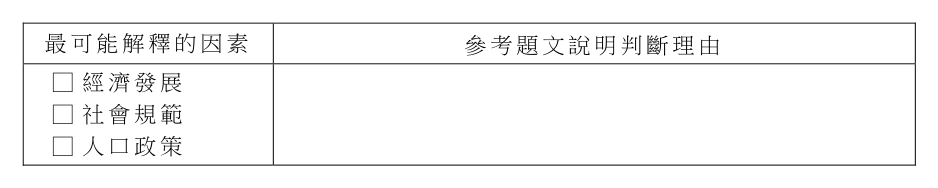
本題選項為上圖中的 A／B／C／D，請對照圖片作答。
標準答案未收錄
詳解與考點 考點：生育率因素（非選）。學者甲關鍵發現是北歐半數新生兒為非婚生、東亞多在婚內，差異在對非婚生育的接納，屬「社會規範」，應勾此項；理由：北歐規範較能接受非婚生育故出生率高。陷阱：題文未比經濟發展或人口政策。（AI需查證）
◎ 近代華人對東洋與西洋的分界，有不少史料可參考。1617 年《東西洋考》提到：「文萊，即婆羅國，東洋盡處，西洋所自起也」；民國初年學者進一步補充：「明代以交趾、柬埔寨、暹羅以西今馬來半島、蘇門答臘、爪哇、小巽他群島，以至於印度、波斯、阿拉伯為西洋；今日本、菲律賓、加里曼丹、摩鹿加群島為東洋」。「文萊」即今之「汶萊」。王室信奉伊斯蘭教，在十四至十六世紀期間是中國與伊斯蘭世界貿易的中繼站。 1997 年汶萊海域發現了一艘十五世紀的沉船，由打撈出來的貨物研判，該船應該是在中國南方港口裝貨之後，預計航向伊斯蘭世界。請問：
第 55 題
依據題文，下列何者最可能是該沉船打撈起來的貨物？
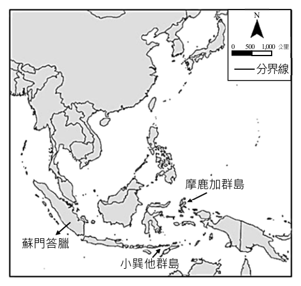
（A） 象牙（B） 香料（C） 銀幣（D） 瓷器答案：（D）
詳解與考點 正解：題幹關鍵是十五世紀沉船由中國南方港口裝貨，經汶萊這個中國與伊斯蘭世界貿易的中繼站，預計航向伊斯蘭世界；應選中國當時外銷的大宗商品。D 的瓷器是中國出口的重要貨物，最符合航線與時代，故 D 為正解。
A：象牙主要由非洲或東南亞輸入中國，不是中國南方港口運往伊斯蘭世界的代表性出口貨物，A 錯誤。
B：香料主要產自東南亞，屬輸入中國的商品；由中國出發的船舶最可能載運中國製品，B 錯誤。
C：美洲白銀在十五世紀尚未大量流通於亞洲貿易，與題幹的時代不符，C 錯誤。它看起來對，是因為白銀後來確為東亞貿易的重要貨幣，但不能套用到十五世紀。
本題考點：東西洋貿易——汶萊是中國與伊斯蘭世界的中繼站；時空判讀——先由出發地與目的地判斷貨物流向，再以年代排除尚未大量流通的商品。
第 56 題
依照文中民國初年學者的研究成果，請在東南亞的範圍內，於答題卷的地圖中畫出明代東洋與西洋的分界線。（ 3 分） N 0 500 1,000 公里分界線摩鹿加群島蘇門答臘小巽他群島
本題選項為上圖中的 A／B／C／D，請對照圖片作答。
標準答案未收錄
詳解與考點 考點：史地空間判讀（非選，畫分界線）。依學者：蘇門答臘、爪哇、小巽他群島以西為西洋；加里曼丹、菲律賓、摩鹿加群島為東洋。畫線要點：須通過婆羅洲西側，使蘇門答臘在西洋側、加里曼丹與摩鹿加在東洋側。陷阱：勿把婆羅洲畫入西洋。（AI需查證）
關於臺灣第一高峰玉山（圖 9），不同族群在不同時代，都留有與它有關的紀錄：
I. 布農族傳說：以前有隻大蛇堵住海水出口，海水往上升。人跟其他動物逃到 Usaviah（最終避難之山峰）……布農人下山後分離，形成不同 Siduh（族類）。II. 鄒族傳說：鰻魚橫臥河中，大地出現大洪水……人們請大螃蟹去夾鰻魚身體，因大洪水若淹到 Patungkuonu（玉山），人也會全部淹死。III. 西方文獻記載：據說摩里遜山（玉山）是以第一艘駛入安平港的英國輪船船長命名，也有人說，1845 年英國航海地圖早可見 Mt. Morrison。IV. 臺灣省政府訓令：查新高山原名玉山，及日人據臺，因測玉山高度較其本國最高峰富士山為高，乃改名新高山，致該山名稱，含有日本色彩，應予改正。
第 57 題
題文中「玉山」最後的定名，從統治權力運作的觀點來看，與下列哪項事件性質最接近？
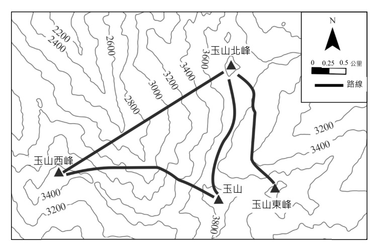
（A） 雍正廢除清朝初建課徵的丁稅（人口稅），改為攤丁入地（畝）（B） 阿拉斯加被俄羅斯出售後，曆法制度從原有曆法改為公（西）曆（C） 臺灣省政府發行新臺幣，以取代臺灣省行政長官公署發行的臺幣（D） 南韓政府將首都官方中文譯名，以首爾取代獨立後即使用的漢城答案：（B）
詳解與考點 正解：題幹的「玉山」最後定名是統治權力更迭後，以新名稱取代原有「新高山」的作法，觸發主權轉移後的命名或制度改變。B：阿拉斯加由俄羅斯出售後改採公曆，是易主後改變既有制度，性質最接近，故 B 為正解。
A：攤丁入地是同一政權內的賦稅改革，不是統治權更迭後改名或改制，A 錯誤。
C：發行新臺幣取代舊臺幣屬貨幣制度調整，題幹未呈現以政權易主取代既有命名的核心，C 錯誤。
D：首爾取代漢城是官方中文譯名調整，不是主權轉移後的制度替換，D 錯誤。
本題考點：統治權與命名政治——政權更替常透過改名、改曆等措施重塑統治象徵；比較事件時先辨認是否同時具備「統治權轉移」與「取代既有名稱或制度」兩項條件。
第 58 題
不考慮天氣因素，僅由圖 9 的等高線疏密與地形走向判斷，圖中哪條路線是沿著山脊前進，並且最有可能在沿路就可遠眺到 Morrison 船長駛入的港口？
（A） 玉山西峰 → 玉山（B） 玉山北峰 → 玉山西峰（C） 玉山 → 玉山北峰（D） 玉山東峰 → 玉山北峰答案：（C）
詳解與考點 正解：題幹要同時判讀等高線與通視方向，安平港位於玉山西方海岸，且沿山脊前進應行於較高、連續的稜線。C：玉山至玉山北峰的路線沿稜脊前進，西側視野較開闊，最可能遠眺西方的安平港，故 C 為正解。
A：玉山西峰至玉山的走向雖在高山區，未同時符合題圖所示最適合朝西通視的稜脊判準，A 錯誤。
B：玉山北峰至玉山西峰須經地形轉折，非題圖所示最直接的稜脊通視路線，B 錯誤。
D：玉山東峰至玉山北峰偏向東側地形，較不利遠眺西方海岸，D 錯誤。
本題考點：等高線判讀——山脊是高處向外延伸的連續地形，路線常跨越等高線而非沿谷地匯流；通視判斷——先定目標所在方位，再選遮蔽較少且位於稜線的路徑。
第 59 題
原住民族關於玉山的傳說，可用於討論哪項議題？請在答題卷上勾選一個正確議題（ 1 分），並從題文中找出判斷依據且加以說明（ 2 分， 50 字內）。議題 □ 各族的名稱起源 □ 各族的活動空間 □ 各族的社會階層判斷依據與說明
本題選項為上圖中的 A／B／C／D，請對照圖片作答。
標準答案未收錄
詳解與考點 考點：傳說作為史料（非選）。布農「下山後分離成不同族類」、鄒族以玉山為避難中心，皆反映以玉山為核心的遷徙與分布，應勾「各族的活動空間」；依據：兩傳說均述逃往玉山再遷徙。陷阱：未提族名由來或社會階層，勿選餘二項。（AI需查證）
◎ 1918 年爆發的「西班牙流感」，曾造成全球數千表 3 萬人死亡。該疫情早在 1918 年春天，即在大戰的西線戰場出現，只是當時許多國家正值戰事，進行媒體審查，隱匿本國及軍隊的疫情，但西班牙因未參戰也沒有媒體審查限制當地疫情報導，在其他國家大量轉載西班牙的新聞下，導致世人誤以為該次流感是從西班牙開始。後來研究發現，流感第一個病例於 1918 年春天出現在美國堪薩斯城的軍營，隨後因美國參戰而傳播至歐陸。表 3 是 1918 年底美國三個都市的流感死亡人數。請問：都市死亡人數（人）堪薩斯城洛杉磯費城 382 1546 7024
第 60 題
某生發現至今仍有很多人誤以為西班牙流感起源於西班牙，為探究此種以訛傳訛、持續發生的認知錯誤問題，該生最適合使用下列哪個概念展開探究？
（A） 媒體近用（B） 媒體壟斷（C） 媒體再現（D） 媒體守門答案：（C）
詳解與考點 正解：題幹描述戰時媒體審查隱匿本國疫情，西班牙的報導卻被大量轉載，最後形成「流感起源於西班牙」的失真印象；關鍵在媒體如何選擇、建構與呈現事件。C：媒體再現正是探究媒體呈現如何形塑閱聽人認知的概念，故 C 為正解。
A：媒體近用指接近、使用媒體資源的機會與能力，不是錯誤印象被建構的原因，錯誤。
B：媒體壟斷指少數業者控制媒體市場，題幹未討論所有權集中，錯誤。
D：媒體守門指新聞選擇與篩選的過程；雖與審查有關，但本題聚焦於被呈現後形成的失真形象，媒體再現更貼切，錯誤。
本題考點：媒體素養——媒體再現關注媒體如何建構事件與形象，可能影響大眾認知；媒體近用談使用機會，媒體壟斷談所有權集中，守門談資訊篩選。
第 61 題
今日若要藉由歷史考察來修正「西班牙流感」這個錯誤名稱，最適合使用的材料為何？請在答題卷上勾選一個正確選項（ 1 分），並說明此材料適合使用的理由（ 3 分， 40 字內）。最適合修正「西班牙流感」名稱的材料 □ 1918 年各國衛生單位的疫情記錄 □ 1918 年各國疫情新聞報導的內容 □ 1918 年西班牙的疫情升降曲線圖此材料適合使用的理由
表3 都市 死亡人數（人） 堪薩斯城 382 洛杉磯 1546 費城 7024
標準答案未收錄
詳解與考點 考點：史料證據力。修正誤名須證明疫情早在他國出現卻被隱匿，故選「各國衛生單位疫情記錄」；官方記錄較不受戰時媒體審查左右，能還原真實發病時序。陷阱：新聞報導正是審查與轉載失真源頭，西班牙曲線圖只證該國非首發。（AI需查證）
第 62 題待校
依照表 3 的數據，請在答題卷的地圖中，以分級符號方式繪製「流感死亡人數」的統計地圖，並繪製圖例。（ 4 分）洛杉磯堪薩斯城費城圖例死亡人數（人） 2000 以上 500 – 2000 500 以下
標準答案未收錄
詳解與考點 考點：分級符號統計地圖。依表3與圖例：費城7024屬「2000以上」畫最大符號、洛杉磯1546屬「500–2000」中符號、堪薩斯城382屬「500以下」小符號，於對應位置畫圓點並附圖例。陷阱：符號大小須與級距相符，勿漏圖例。（AI需查證）
◎ 全球飢餓指數（ GHI）是衡量各國飢餓或營養不良情況的指標，指數愈高，表示飢餓狀況愈嚴重。表 4 為世界各區 GHI 的分布，資料中顯示，全球的飢餓狀況雖已有改善，但區域間飢餓情況差異仍然巨大。飢餓或營養不良皆與糧食供應有關。根據統計，全球小麥及其他糧食總產量其實超過全球人口消費量，所謂「糧食危機」並非產量不足，而是分配不均的結果。例如：巴西是世界最大的大豆出口國，卻有四分之一人口處於饑荒狀態。值得注意的是，各地經常發生的氣候異常現象，也加劇全球糧食分配不均的問題。請問：區域全世界漠南非洲南亞西亞、北非東亞、東南亞拉丁美洲歐洲、中亞 2000 年 28.2 42.7 38.2 17.0 18.5 13.1 13.5 表 4 2006 年 25.4 36.6 36.0 15.0 15.5 10.4 9.2 2012 年 20.5 31.0 29.5 13.8 11.0 8.3 7.5 2020 年 18.2 27.8 26.0 12.0 9.2 8.4 5.8
第 63 題
從表 4 可見「漠南非洲」飢餓指數高於世界其他地區，其與十九世紀下半葉歐洲多國在非洲的剝削與掠奪有關。以下何者是發生於當時的歷史事件？
表4 區域 2000 年 2006 年 2012 年 2020 年 全世界 28.2 25.4 20.5 18.2 漠南非洲 42.7 36.6 31.0 27.8 南亞 38.2 36.0 29.5 26.0 西亞、北非 17.0 15.0 13.8 12.0 東亞、東南亞 18.5 15.5 11.0 9.2 拉丁美洲 13.1 10.4 8.3 8.4 歐洲、中亞 13.5 9.2 7.5 5.8
（A） 歐洲海權大國開始尋找到亞洲最短的貿易路線（B） 歐洲商人在西非洲沿岸設立了販售黑奴的據點（C） 歐洲強權召開國際會議決定非洲勢力劃分原則（D） 歐洲人的殖民使當地人團結反抗種族隔離政策答案：（C）
詳解與考點 正解：題幹限定十九世紀下半葉歐洲列強對非洲的剝削與掠奪，應對應帝國主義瓜分非洲。C：1884–85 年柏林會議由歐洲強權召開，議定瓜分非洲的有效佔領原則，正發生於該時期，故 C 為正解。
A：歐洲海權大國開闢前往亞洲的新航路屬 15–16 世紀，時代過早，錯誤。
B：西非沿岸奴隸貿易據點的起源早於十九世紀下半葉，錯誤。
D：反種族隔離是 20 世紀南非的重要議題，不是題幹所指的十九世紀下半葉事件，錯誤。
本題考點：十九世紀帝國主義——歐洲列強以瓜分與殖民控制非洲；年代判準——1884–85 年柏林會議屬十九世紀下半葉，與新航路、奴隸貿易起源及反種族隔離分屬不同時段。
第 64 題
若僅針對表 4 內容，可推論 21 世紀全球的糧食生產，最可能出現下列哪項發展過程？
表4 區域 2000 年 2006 年 2012 年 2020 年 全世界 28.2 25.4 20.5 18.2 漠南非洲 42.7 36.6 31.0 27.8 南亞 38.2 36.0 29.5 26.0 西亞、北非 17.0 15.0 13.8 12.0 東亞、東南亞 18.5 15.5 11.0 9.2 拉丁美洲 13.1 10.4 8.3 8.4 歐洲、中亞 13.5 9.2 7.5 5.8
（A） 南方區域國家農業技術不及富裕國家，糧食生產總量成長較慢（B） 中低收入國家出口糧食給富裕國家，呈現出不平等交換的關係（C） 氣候變遷使部分地區糧食減產，糧食貿易全球化程度持續緊密（D） 品種改良、灌溉進步等因素，導致糧食增產與人口壓力的減輕答案：（D）
詳解與考點 正解：題幹限定「僅針對表 4」，表中多數區域及全球的 GHI 在 2020 年均低於 2000 年，顯示長期而言整體飢餓情況改善；但個別區域未必每一期都持續下降，例如拉丁美洲由 2012 年的 8.3 微升至 2020 年的 8.4。D 所述品種改良、灌溉進步可促進糧食增產，並有助於緩和人口壓力，是四個選項中最能解釋長期改善趨勢者，故 D 為正解；表 4 本身只呈現 GHI 變化，並未直接測量糧食供應或人口壓力。
A：表 4 沒有呈現南方區域與富裕國家的農業技術或糧食生產總量，不能據此推論，A 錯誤。
B：表中未提供中低收入國家的糧食出口流向或不平等交換資料，B 錯誤。
C：表中未呈現氣候變遷、個別地區減產或糧食貿易全球化程度，C 錯誤。它看起來對，是因為相關背景可能提到氣候異常與分配不均；但題目要求只依表 4，不能把表外背景延伸為表格可證明的因果。
本題考點：統計表推論——先讀清指標方向並比較長期趨勢，GHI 較 2000 年下降表示整體飢餓情況改善，不等於各區每一期都下降；證據範圍判準——表中未列的技術、貿易、氣候、糧食供應及人口壓力，不能寫成表格直接證明的事實，只能用來比較選項的解釋力。
第 65 題
若以圖 10 描述全球小麥及其他糧食的生產與消費組合，圖中的 P 點為滿足全球糧食消費的組合，請根據題文資訊，在答題卷表格左欄，以直線連結橫軸與縱軸上各一圓點，繪出一條符合題文之生產可能線示意圖，並從題文摘述判斷的依據。（ 3 分， 25 字內；左欄錯誤或未作答，本題不計分）其他糧食 P 0 小麥圖 10 二、非選擇題說明：本部分共有 1 題，配分標於題末。限在標示題號作答區內作答。「非選擇題作圖部分」使用 2B 鉛筆作答，更正時以橡皮擦擦拭，切勿使用修正帶（液）。
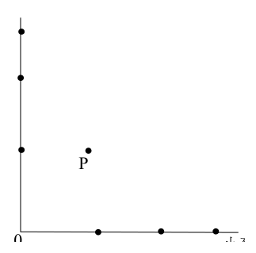
本題選項為上圖中的 A／B／C／D，請對照圖片作答。
標準答案未收錄
詳解與考點 考點：生產可能線。題文指糧食「總產量超過消費量」，故滿足消費的P點應落在PPF內側；連兩軸圓點所成的線須在P點外上方，使P為產能有餘的可達點。依據：產量超過消費、危機在分配不均。陷阱：勿讓P落線上或線外。（AI需查證）
第 66 題
某公司從某國進口符合該國食用油標準之食用油，但進口時為逃避繁瑣的進口檢驗，刻意選擇「工業用途」名義以加速通關。相關食安法律規定，申報不實得處新臺幣三百萬元以下罰鍰。某市政府查獲該公司申報不實後，因其行為對消費者造成重大食安疑慮，決定處以最高額度的罰鍰。該公司不服，表示該油品符合輸出國的食用油標準，並無影響人民健康的重大違法情節。依前述，該公司若要提起行政訴訟，訴訟攻防中可以主張的法律原則為何？請在答題卷表格左欄勾選一項原則，並從題文摘述對應的事實論據。（ 3 分， 20 字內；左欄未勾選或勾錯，本題不計分）訴訟攻防所涉原理原則 □ 正當程序 □ 比例原則 □ 信賴保護摘述題文的事實論據
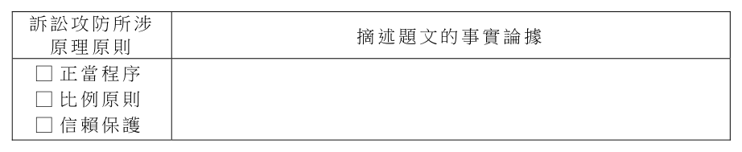
本題選項為上圖中的 A／B／C／D，請對照圖片作答。
標準答案未收錄
詳解與考點 考點：行政法基本原則。公司以「符合輸出國標準、無重大違法」抗辯卻遭頂額重罰，主張處罰與情節不相當，應勾「比例原則」；論據：手段與違規輕重須相稱。陷阱：正當程序針對程序瑕疵、信賴保護針對信賴政府表示，均非爭點。（AI需查證）
其他年度
回到學科能力測驗社會的年度總覽 ，
或到學科能力測驗題庫首頁 看其他科目。
題目與標準答案出自大考中心 學測歷年試題（依著作權法 §9，考試試題不受著作權保護）。依中華民國《著作權法》第 9 條第 1 項第 5 款，
依法令舉行之各類考試試題不得為著作權之標的，得自由利用。詳解為 AI 整理的學習輔助，
並非官方標準答案 ；中華民國會修訂，引用前請對照現行版本查證。